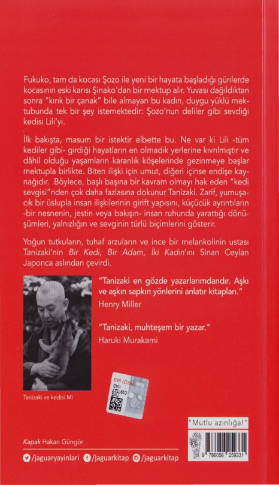

göre gerçekten kaçabilirdi. Şinako, bir hayvanın güvenini kazanmak için sabırlı olmak gerektiğini biliyordu artık; ama Lili'nin bir şeyler yediğini görebilmek için camdan zorla alıp odanın ortasına getirdi Lili'yi, burnunu bastırarak sırayla koklattı yiyecekleri. Lili ise var gücüyle tepinip pençelerini çıkararak cırmalamaya başladı. Bunun üzerine, pes edip gitmesine izin verdi Şinako. Lili tekrar pencereye gidip ku- maş kutusunun üstüne çıktı.
"Lili'cim, bak, bak buraya. Bunların hepsi de senin deli olduğun şeyler, anlamadın mı yoksa?" Şinako inatla kediyi sağa sola sürükleyip bir süte, bir tavuğa zorla burnunu bastı- rarakkoklatmaya çalışıyordu ama hayvan bugün en sevdiği mamaların kokusuna bile tav olmuyordu. Oysa tamamen yabancı birisine verilmemişti; ikisi senelerce aynı çatı altında yaşayıp aynı yemeği paylaşmışlar, diğerleri İmazu'dayken üç dört gün boyunca baş başa kalmışlardı. Ama şimdi Şinako'ya buz gibi davranıyordu. Belki de Şinako'nun ona kötü davran- dığı zamanlara içerlemişti. Sonunda sinirlendi Şinako, "Seni küstah şey!" diye bağırdı. Eğerkedi bir şekilde kaçarsa, sadece planlan suya düşmekle kalmaz, daha kötüsü Aşiya'dakiler buna zevkle alkış tutarak "Kapak olsun!" derlerdi. Her neyse, kediyle içinde bulunduğu bu durum sabır testinden başka bir şey değildi ve yapılacak tek şey karşı tarafın gardı düşene kadar beklemekti. Çünkü önünde bu kadaryiyecek ve kum havuzuvarken Lili daha fazla dayanamazdı. İnatçı olmasına inatçıydı ama er geç acıkacak ve çişi gelecekti.
Tüın bunlar yetmezmiş gibi, Şinako'nun henüz başla- madığı ve akşama yetiştirmek zorunda olduğu dikiş işleri de vardı. Bunu hatırlayınca kalkıp dikiş kutusunun başına oturdu, eline pamuk dolgulu bir erkek kimonosu aldı ama daha bir saat geçmeden yine kediyi merak edip kaçamak
51
bakışlar atmaya başladı. Lili, sonunda-kedi olmasına rağ- men- kaçmanın mümkün olmadığını anlamış, odanın en uzak köşesine gitmiş, bir daha kaçmayı aklından bile geçirmemek üzere duvara yaslanmış, hareketsiz kalmıştı. Etrafı sarılmış, bütün umudunu yitirip müthiş bir kederle kendini ölüme terk etmiş bir insan gibiydi. Onu böyle görmek Şinako'yu rahatsız etti, sessizce yanına giderek hala hayatta olup ol- madığına baktı. Kediyi kaldırdı, nefesini kontrol etti, sağını solunu dürtükledi; ama Lili en küçük bir tepki göstermedi, vücudu denizkulağı gibi kaskatı ve duyarsız görünüyordu. Ne inatçı kediydi! Olanlara aldırış etmeden sakinleşip yeni evini kabullenecek miydi acaba? Belki de numara yapıyor ve Şinako'nun gardının düşmesini bekliyordu. Kaderini kabullenmiş gibi görünse de, istese ağır bir tahta kapıyı bile kendi başına açıp kaçabileceği için yalnız bırakmaya gelmezdi. Şinako, yemek ve tuvalet meselesini düşününce, Lili'nin yanı sıra kendisi için de endişe duymaya başladı. Nasıl alt kata inip yemek yiyecek, tuvalete gidecekti? Öğlen olduğunda, kız kardeşi Hatsuko alt kattan seslenip yemeğin hazır olduğunu söyleyince, "Geliyorum," diyerek ayağa kalktı, bir süre huzursuzca odada dolandıktan sonra muslin kumaşından yapılmış üç kemeri birbirine bağlayıp Lili'nin bedeninden geçirmeye başladı. Önce omzunun üze- rinden geçirip koltuk altından çıkarıyor sonradiğer tarafına da aynı şeyi tekrarlıyordu. Kemeri ne çok sıkarak ne de çokgevşekbırakarak defalarca hayvanın vücuduna dolayıp sırtında sağlam bir düğüm atmadan önce odada dolaşırken tavandansarkanlambanın kablosunu gördü, ona bağlamaya karar verdi. Sonra gönül rahatlığıyla aşağıya indi.
Amayemeğini yerken endişelendi, alelacele tıkıştırtı önün- dekileri, Lili'yi kontrol etmek için hemen üst kata çıktı. Lili,
52
sımsıkı bağlı bir halde, daha önce çömeldiği köşeye gitmiş, kamburunu çıkarnuş oturuyordu. Eskisinden daha da küçük görünüyordu. Şinako, bir başına kalırsa belki yemeğini yer, çişini falan da yapar diye düşünüp kediyi bir süre yalnız bırakmaya karar verdi. Bu, Şinako'nun temennisiydi; el- bette böyle bir şey olmadı. Sonra olmazlandı, kendi kendine "Cık!" dedi, yerine gidip dikiş kutusunun başına oturdu. Amaçsızca odanın ortasına yayılmış yiyeceklere, içindeki kumda nemden eser olmayan tertemiz leğene baktı. Sonra kediyi çok uzun süre bağlı tutmanın hoş olmayacağına karar verip kalktı, hayvanı çözdü. Kucağına alıp okşadı, kaldırıp -pek bir beklentisi olmasa da- yemek yemeye zorladı. Ta ki alacakaranlık basana kadar gün boyu aynı şeyi defalarca yaptı. Saat altı gibi Hatsuko alt kattan tekrar seslenerek akşam yemeğinin hazır olduğunu söyleyince ayağa kalkıp eline kabloyu aldı. Böylece tüm gününü kedi ile uğraşarak harcamış, uzun sonbahar akşamı gelip çattığında günlük dikiş işini yapmadığını fark etmişti.
Saat on birde ortalığı topladı Şinako. Lili'yi iki kalın yas- tığın üzerine yatırdı, yiyeceklerini ve kum havuzunu yanına çektikten sonra tekrar bağladı. Sonra kendi döşeğini serip ışığı kapattı, uyumaya çalıştı amadurmadan"Sabaha kadar -süt olsun, tavuk olsun- herhangi bir şeyi yese bari," ya da ''Kumlarda ufacık bir ıslaklık görsem çok sevinirim," diyordu kendi kendine. Bu düşünceler onu bir türlü uyutmuyordu; gözleri fal taşı gibi açık, en azından nefes alıp verdiğini duyayım diye kendini zorluyordu. Ama karanlık odada çıt çıkmıyordu. Yoğun sessizlik sinirleri bozuldu, kafasını yas- tıktan kaldırıp baktı, pencereden sızan cılız ışığa rağmen ne yazık ki Lili'nin yattığı köşe kapkaranlıktı. Sonra Lili'yi bağladığını hatırladı ve kalkarak köşeye doğru gerilmiş kah-
53
loyu yakalayıp şöyle bir yokladıktan sonra ucunun bir şeye bağlı olduğuna kanaat getirdi ama yine de emin olmak için ışığı yaktı. Lili orada olmasına oradaydı ama tıpkı gündüz nasılsa yine aynı küskünlükle dertop olmuş, kamburun u çıkarmış oturuyordu. Yemekle kumolduğugibi duruyordu. Şinako tiksinti ile ışığı kapattı. Yavaşça içi geçti. Çok geç- meden uyandığında gün ağarıyordu. Leğenin içinde besbelli kocaman bir kaka vardı ve süt ile pirinç kaseleri boşalmıştı. Şinako "Yaşasın!" diye sevinçle bağırdı yatağından kalkarken. Bir kediye üstünlük sağlamak gerçekten bu kadar yıpratıcı bir uğraş mıydı? Yoksa sorun Lili'nin aşın inatçı oluşundan mı kaynaklanıyordu? Hala küçük, masum bir kedi olsaydı kolayca uzlaşırdı belki. Yaşlı kediler,yaşlı insanlargibi inatçı oluyordu demek ki. Tamamen farklı adetleri ve kurallan olan yeni bir ortama girmek şaşırtıcı hatta ölümcül şoka yol açan bir şey olmalıydı. Şinako malum sebepten dolayı sevmediği halde bakmıştı ona; ileride bu kadar başını ağ- ntacağını bilemezdi. Eskiden bir bakıma düşman gördüğü bir hayvan uğruna uykusuz kalmak, hak ettiğinden daha büyük bir talihsizlikti. Fakat aralarındaki o gizli bağı dü- şününce öfkesi geçti; aksine onun için de üzüldü. Aşiya'daki evden kalkıp buraya geldiğinde, önceleri kendisi de tüm gün üst kattaki bu odada bir başına kalıp kötü günler ge- çirmişti. Kız kardeşi ve kocası ortalıkta olmadığında gece gündüz durmadan ağlamıştı. İlk birkaç gün neredeyse hiçbir şey yememiş, bitap düşmüştü. Öyle düşününce, Lili'nin de Aşiya'daki evini özlemesi doğaldı; aksine Şozo tarafından bu kadar sevilip ilgi gösterilmesine rağmen huzursuz olma- ması zaten nankörlükolurdu. Ve Lili'nin yaşında bir kedinin alışık olduğu huzurlu ortamından sürgün edilip hiç sevme- diği birinin evine getirilmesi gerçekten acı verici olmalıydı.
54
Eğer Şinako Lili'yi gerçekten rahat ettirmek istiyorsa, bu huzursuzluğunu da göz önüne alarak kendini emniyette his- setmesini sağlayıp güvenini kazanması gerekiyordu. Bu denli üzgün olup da bir şeyler yemeye zorlanmak herkesi üzerdi. Ama eliyle kum dolu leğeni işaret ederken gayet nahoş bir şekilde, ''Yemeyeceksenyemeamabari işe şuraya!" deyiverdi. Hadi bu hoş görülebilirdi belki ama kediyi bağlayacak kadar haddini aşmıştı. Eğer birinin size güvenmesini istiyorsanız önce siz ona güvenmelisiniz. Lili, bağlanınca daha da kork- muştu. Dahası bir kediyi sımsıkı bağlamak olan iştahını da kaçırır, çiş yapmasını güçleştirirdi.
Ertesi günden itibaren Şinako cesurca bir karar alıp, "Kaçarsa kaçsın," diyerek Lili'yi bağlamayı bıraktı. Zaman zaman beş on dakikalığına yalnız bırakıyordu. Lili kendi köşesinde inatla çömelmeye devam ediyordu. Üstelik pek kaçmaya niyeti var gibi görünmüyordu. Ancak bu, Şinako'nun çok çabuk pes ettiği anlamına geliyordu. Olay, yanın saat- liğine alt kata inip değişiklik olsun diye telaş etmeden öğle yemeği yerken olmuştu. Üst kattan bir tıkırtı duyunca ale- lacele yukarı çıktı ve sürgülü kapının on santimetre kadar açık olduğunu gördü. Lili oradan koridora çıkmış, güneye bakan geniş odayı geçmiş ve talihsizlik eseri açık unutulmuş pencereden çatıya zıplamış olmalıydı ve şimdi görünürde Lili'nin L'si bile yoktu.
Yüksek sesle, "Lili'cik!" diye bağırdı Şinako ama karşılık alamadı. Lili'nin kaçmış olduğugerçeğiyle yüzleşip katlandığı bunca zahmetin boşa çıktığını görünce zihni boşaldı. Sanki sırtından yük kalkmış gibi hafiflemiş hissediyordu kendini. Anlaşılan hayvanlarla geçinemiyordu, kedi er ya da geç ka- çacaktı, belki de en iyisi durumu kabullenip vazgeçmekti. Rahatlamıştı doğrusu; işini daha kolay yapabilecek, geceleri
55
kolayca uyuyabilecekti. Yine de evin arkasındaki boş arsaya gidip çalılıkların arasında sağa sola bakınarak, ''Lili, Lili'cik!" diye seslendi. Lili'nin bu çorak arsada vakit kaybetmeyeceğini bilse de, yine de bir süre aramaya devam etti.
Lili'nin kaçtığı günün gecesi, sonraki gece ve daha sonraki gece, huzurlu olmak şöyle dursun, uyuyamadı bile Şinako. Henüz yirmi altı yaşında olmasına rağmen, huysuzun teki olduğundan uyumakta zorlanırdı. Hizmetçi olarak çalıştığı zamanlarda hoş olmayan bir şey yaşansa uyuyamazdı. Kız kardeşinin evine taşındığından beri yerini yadırgadığı için günde üç dört saatten fazla uyuyamıyordu. Son dönemde nihayet uykusu düzelir gibi olmuştu. Ama kedinin kaçtığı akşamdan beri uykusuzluğu tekrar nüksetmişti. Belki de Lili yüzünden ihmal ettiği dikişlerini yetiştirmek için gere- ğinden fazla çalışıyor olması mıydı bunun nedeni? Saatlerce çalışınca omuzları ağrıyor, sinirleri geriliyordu.
Henüz ekimin başı olmasına rağmen havanın soğuması Şinako'nun canını sıkmaya başlamıştı. Her zaman soğuğa karşı hassastı, şimdiden ayaklarının üşümesi keyfini ka- çırıyor, yorganın altına girse bile üşüme hissi geçmiyordu. Birdenbire, kocası ile arasına ilk soğukluğun girdiği zamanı hatırladı, sebebi tamamen Şinako'nun soğuğa karşı hassa- siyetiydi. Şozo yatağa girdikten beş dakika sonra kolayca uykuya dalıyor amaŞinako'nun buztutmuş ayakları kendisine temas edince aniden uyanıyordu. Sinirinden çılgına dönüp karısına, "Kalk git, şurada uyu!" diye emirler yağdırıyordu. Soğuk havalarda Şinako'nun sıcak su şişesi kullanması yü- zünden çıkan kavgaların da etkisiyle giderek ayrı uyumaya başladılar. Şozo'nun yapısı karısının tam tersiydi, vücut sı- caklığı ortalama bir insanın hayli üzerindeydi. En çok da ayakları fazla ısındığı için kışın bile yorganın altında biraz
56
aralık bırakmazlarsa sıcaktan uyuyamadığını öne sürerdi. Sıcak su şişesiyle ısıtılmış yatağa girınekten hiç hazzetmez, buna beş dakikadan fazla katlanamazdı. Tabii ki araların- daki uyumsuzluğun temel sebebi bu değildi ama fiziksel yapılarındaki bariz farklılıklar karı kocanın ayrı uyuması için geçerli bir bahaneydi.
Şinako'nun bu kez de boynu tutulmuştu, ağrı boynun- dan başlayıp sağ omzuna kadar iniyordu. Yastığın yerini değiştirip soluna dönerek o bölgeye masaj yapmaya çalıştı. Her sene mevsimyazdan güze dönerken sağ alt çenesindeki dişi ağrımaya başlardı, dün gece de ağrıdığını hissetmişti. Dahası, dağlardan gelen riizgarların da etkisiyle Rokko'nun Aşiya'dan çok daha soğuk olduğunu duymuştu. Heriki kasaba da Osaka - Kobe arasındaki bölgede olmasına rağmen daha ekim ayında geceler çok soğuk olmaya başlamıştı. Karides gibi büzülüp soğuktan üşümüş ayaklarını birbirine sürttü. Aşiya'dayaşadığı zamanlar, kocasıyla kavga etme pahasına da olsa sıcak su şişesi hazırlamaya ekim sonlarına doğru başlardı ama mevcut hava koşullarında bu sene o kadar beklemeyebilirdi.
Uyuyamayacağını anlayınca kalkıp lambayı yaktı ve kız kardeşinden ödünç aldığı Ev Kadınının Arkadaşı dergisini açtı; okumaya başlayınca saatin tam bir olduğunu fark etti. Uzaklardan duyulan kararlı bir yağmur sesi çok geçme- den giderek yaklaştı. İçinden "Sağanak olsa gerek," diye düşünürken ses giderek arttı, evin çatısında tıpırdayarak geçip gitti. Sonra bir başka sağanak geldi. Şimdi Lili ne yapıyordur acaba diye iç geçirdi. Sağ salim Aşiya'ya gide- bildiyse sorun yoktu ama eğer yolunu kaybetmiş ve böyle bir akşamda yağmura tutulmuşsa iliklerine kadar ıslanmı ş olabilirdi. Şinako, Lili'nin kaçtığını henüz Tsukamoto'ya ha-
57
her vermemişti ve bu, o geceden beri aklım kurcalıyordu. Elbette ne kadar erken haber verse o kadar iyi olurdu ama "Pardon Hanımefendi, Lili eve döneli bir süre oldu; size de zahmet verdik ama artık endişe etmeyin lütfen," şeklinde iğneleyici bir cevap beklediği için haber vermeyi erteliyordu. Diğer yandan, eğer Lili Aşiya'ya varmış olsaydı Şinako'dan haber beklemezler, aksine onlar Şinako'ya kedinin geldiğini haber verirlerdi ama şimdiye kadar sesleri çıkmadığına göre Lili bir yerlerde kaybolmuş olmalıydı. Amagasaki'den evine dönmesi yaklaşık bir hafta sürmüştü ama bu kez Aşiya ile ev arasındaki mesafe o kadar uzak değildi ve buraya henüz üç gün önce getirildiği için yolunu kaybetmemeliydi. Tek sorun Lili'nin artık yaşlı olmasıydı; eskisi kadar süratli değildi ve çevik hareket edemiyordu. Eskiden üç günde gideceği yolu artık dört günde ancak katedebilirdi. Ama öyle bile olsa, en geç yarın ya da ertesi gün güvenle Aşiya'ya varacaktı. İşte o zaman Aşiya'daki ikili mutluluktan kırılıp geçecek, Tsukamoto da onlara katılıp "Bakın şu işe, sadece kocası değil kedisi bile terk etti bu kadım!" deyip kafa bulacaktı. Ve kaçınılmaz olarak alt kattaki kız kardeşiyle onun kocası da aynı şeyi düşünecekti. Aslında bu hikayeyi artık kim duysa kadıncağız alay konusu olacaktı.
Bir başka sağanak daha çatının üzerinde patırtı yaparak geçtikt.ensonra sanki pencereye bir şey çarpmış gibi aniden bir tıkırtı duydu. ''Bir rüzgar eksikti," diye hayıflanırken rüzgar olamayacak kadar sert bir şey peşi sıra iki kez camı tıklattı ve ardından belli belirsiz bir miyavlama sesi duydu. "Hadi
canım, geceninbu saatinde, yok artık... Herhalde sinirlerim bozuldu," diye kulaklannıyoklarken bir başka miyavlama ve hemen ardından pencerede bir tıkırtı daha duydu. Yataktan fırlayıp perdeyi açtı, dışarıdan gelen miyavlamayı açıkça
58
duyabiliyordu ve bir karartının pencereye vurduğunu gördü. Bu gerçek miydi, sahiden olabilir miydi? Sesi tanıyordu, Lili evinde kaldığı o gün boyunca sesini hiç çıkarmadıysa da Aşiya'daki eski günlerinden o sesi hatırlamıştı.
Aceleyle pencerenin kilidini açıp dışarıya sarktı ve odanın tavan lambasından sızan güçsüz ışığın yardımıyla etrafa göz gezdirdi. Heryer kapkaranlıktı. Parmaklıklardan küçük balkona tırmandıktan sonra miyavlayarak cama vurduğunu tahmin ediyordu Lili'nin. Az önce gördüğü siluet o olmalıydı ama pencereyi açar açmaz korkup kaçmış olabilirdi. Şinako alt katta uyuyançiftin rahatsız olacağından çekin- meden, "Liliii, Liiilii ..." diye yüksek sesle bağırdı. Kiremitler ıslaktı ve ışıkta parlıyordu, bu da az önceki sağanak tahminini haklı çıkarıyordu ama pırıl pırıl yıldızlarla dolu açık gökyüzü gördüklerini yalanlıyordu. Tam karşısında Maya Dağı'nın kapkara etekleri yükselip ufku kaplıyordu, teleferiğin ışık- ları çoktan kararmıştı ama zirveye çöreklenmiş otelden cılız bir ışık yayılıyordu. Bir dizini balkonun duvarına yaslayıp tedirginlikle yükseldikten sonra çatının üzerinden "Liiili !" diye seslendi. "Miyav," diye bir cevap aldı ve kiremitlerin arasında parlayan iki göz Şinako'ya doğru yaklaştı. "Lilii?"
"Miyaav." "Lili!" "Miyaav."
Defalarca ona ismini söyledi: Lili her seferinde cevap verdi. Daha önce böyle bir şey yaşanmamıştı. Lili, kimin onu sevdiğini, kimin ondan gıcık kaptığını biliyormuş gibi, Şozo'nun seslenmelerine her zamanyanıtvermiş, Şinako'ya karşı tepkisiz kalmıştı. Ama bu gece defalarca yanıt verme
59
zahmetinde bulunmuş, sesi ise giderek sıra dışı bir biçimde tatlı, işveli bir hal almıştı. Doğrudan parmaklıkların altına gelip parlak yeşil gözleriyle Şinako'ya baktı, sağa sola sen- deledikten sonra biraz geriye doğru kaydı. Şüphesiz ki se- sindeki bu tonlama, bunca zaman pek hazzetmediği fakat bu akşamdan itibaren yardımına muhtaç kaldığı birisine karşı özür niteliği taşıyordu. Kedi, tamamen değiştiğini, o andan itibaren buyruğu ve himayesini koşulsuz kabul ettiğini Şinako'ya ispat etmeye kararlı görünüyordu.
Şinako ise ilk defa kediden böyle kibar ve dost canlısı tepkiler alabildiği için çocuklar kadar şendi. Ama yine de ismini çağırmasına rağmen her yakalama girişimi başarısız- lıkla sonuçlanıyordu. Bir süreliğine pencereden uzaklaşmaya karar verdi; o uzaklaşınca Lili çevik bir hamleyle içeri atladı. Şinako'yu daha da şaşırtarak dosdoğruonunoturduğu yatağa gelip ön patilerini dizlerine dümdüz yasladı.
Tümbunlar ne demekoluyordu? Şinako hayretler içinde otururken Lili bakışlarındaki üzgünifadeyle kadının göğsüne doğru sokuluyor, alnını kadının pazen geceliğinin yakasına sürtüyordu. Şinako kendisini yanağını kedinin kafasına sürterken buldu: Lili de çok geçmeden kadının çenesini, kulaklarını ve burnunun ucunu yalamaya başladı. Şinako çeşitli insanlardan, bir kedinin sahibiyle baş başa kaldığında sevgisini göstermek için tıpkı insanlar gibi onu öptüğünü ve yüzünü sürttüğünü duymuştu. Bahsettikleri şey bu muydu? Şozo ortalıktan kaybolup ıssız bir yerde Lili ile takılırken yaptıkları şey bu muydu? Kedinin tüylerinden gelen acayip, tozlu kokuyu soludu, bütün yüzünde kedinin sert, pütürlü dilinin gıdıklayıcı sürtünmesini hissetti. Aniden içini kap- layan şefkat dalgasıyla "Lili'ciğim!" diye haykırıp sımsıkı sarıldı. Bu duygu vahasının ortasında, Lili'nin tüylerinde
60
çivi gibi bir soğukluk ve ıslaklık hissedince onun az önceki yağmura yakalanmış olduğunu anladı Şinako.
Peki ama Lili neden Aşiya'ya gitmek yerine buraya geri dönmeye karar vermişti? Kaçtığında evine gitmeyi hedefle- miş ve kaybolup geri dönmüş olması ihtimal dahilindeydi. On beş kilometreden az bir mesafe için üç gün boyunca yollarda olup sonunda pes ederek geri dönmek Lili gibi bir kedi için oldukça küçük düşürücü bir hareketti ama belki de zavallının başka çaresi kalmamıştı. Zihinsel olarak hala kaçmayı göze alacak kadar güçlüydü ama görme ve koku alma duyuları ile hafızası eskiye kıyasla ancak yan yarıya işlevsel olduğu için Aşiya'dan buraya hangi yoldan geldikle- rini, hangi köşeden döndüklerini bilemezdi. Dört bir yanda dolaşıp tamamen kaybolunca geri dönmüşolmalıydı. Eskiden olsa bir yere gitmeyi kafasına koymuşsa ne pahasına olursa olsun vazgeçmezdi fakat şimdi kendine güveni azalmıştı, hiç bilmediği bir yere gidince sinirleri boşanıp bacakları titre- meye başlıyordu. Çok uzaklaşmadan Rokko civarında bir süre takılmış olmalıydı. Öyleyse dün gece de, ondan önceki geceler de Lili pekala Şinako'nun ikinci kattaki penceresine yakın bir yerde sinsice saklanmış, acaba istesem beni içeri alır mı diye düşünerek beklemiş olabilirdi. Karanlıkta öylece çömelmiş düşünerek vakit geçirirken, tam yağmurun bastır- dığı anda odanın ışıklan yanınca birdenbire miyavlamaya karar verip cama vurmuş olması muhtemeldi.
Ama ne olursa olsun eve dönmüş olması iyi bir şeydi. Elbette başı belaya gireceği için geri dönmüş olabilirdi ama en azından Şinako'yu tamamen yabancı saymadığını göster- mişti. Şinako'nun gecenin bir yarısı kalkıp ışıkları yakarak dergi okumasına neden olan şey altıncı hissi değil miydi? Sadece o gece de değil, önceki gecelerde de uyuyamamasının
61
sebebi, Lili'nin döneceğinin içine doğmuş olmasıydı. Böyle düşününce gözlerinden yaşlar boşaldı, bir daha sımsıkı sa- rılarak, "Ah Lili'ciğim, bir daha sakın kaçayım deme," dedi. Bunlar olurken kedi olağandışı bir şekilde sessiz kalarak Şinako'nun kendisini istediği kadar kucaklamasına izin verdi. Kadın, bu yaşlı ve sessiz kedinin gözlerindeki melan- kolik ifadeyi az çok anlayabiliyordu. "Karnın nasıl da açtır şimdi. Amaartık geç oldu. Mutfağa insem bir şeyler bul urum
ama doğru olmaz. Burası benim evim olmadığı için yarın sabaha kadar beklemek zorundayız,'' dedi. Ağzından çıkan her kelimeyle birlikte yanağınıkedinin kafasına sürtüyordu. Sonra nihayet Lili'yi yere koyup kalktı, o anki heyecandan kapatmayı unuttuğu pencereyi kapattı. Yastıklardan ya- tak yaptıktan sonra, o talihsiz geceden beri dokunm adığı kum leğenini dolaptan çıkardı. O bunları yaparken Lili her hareketini izliyor, ayaklarına dolanıyordu. Şinako bir an hareketsiz kalacak olsa hemen koşup kafasını yan yatırıyor, kulaklarının üstünü kadının tenine sürtüyordu. Şinako ise, "Evet, evet. . . Biliyorum. Ama artık gel buraya da uyu hadi,'' diye mırıldanarak Lili'yi yastıklara götürdü. Sonra aceleyle ışıklan kapatıp kendi yatağına sokuldu. Henüz bir dakika bile geçmemişti ki, o tanıdığı tozlu tüy kokusu burnunun dibinde peydahlandı, sonra bu yumuşacık kadife tüylü şey yorganı aralayıp altına girmenin yolunu buldu. Başıyla yorganı iterek ayakucuna kadar gitti Lili; bir süre orada oyalandıktan sonra gerisin geri yukarı tırmandı. Sonunda Şinako'nun geceliğinin göğüs kısmından kafasını soktu, te- pişmeyi bıraktı ve hemen yüksek sesle neşe dolu mırıltılar çıkarmaya başladı.
Lili, Şozo'nun yanında yatarken Şinako onlara arkasını dönüp uyumaya çalışır ve o sırada sıkça duyardı bu mırıl- tıları. İçten içe kıskanırdı onları. Bu akşam mırıltıları her
62
zamankinden daha yüksek seste duyuyor olmasının, kedinin keyfinin yerinde olmasından mı yoksa hemen başucunda yatıyor olmasından mı kaynaklandığını bilmiyordu. Lili'nin soğuk, ıslak burnunu, tuhafbir biçimde yumuşak ve şişkin pati altlannı ilk kez kendi göğsünde hissetmek Şinako'nun kafasını kanştınnıştı; bir yandan huylanıyor, bir yandan seviniyordu. Karanlıkta el yordamıyla Lili'nin boynunu ok- şayınca kedi daha yüksek sesle hınltı çıkanp bazen kadının işaret parmağına diş izlerini bırakacak sertlikte ani ısırıklar kondurmaya başlamıştı. Şinako daha önce hiç böyle şeylere tanık olmamasına rağmen bunun sevgi gösterisi olduğunu anlayabiliyordu.
Ertesi günden itibaren Lili, Şinako ile yakın arkadaş oldu, ona tüın kalbiyle güvendi. Artık süt, kurutulmuş balıklı pilav ve başka ne varsa itinayla tüketiyor ve kum kabına günde birden fazla kez pisliyordu, dolayısıyla yedi metreka- relik odası şimdiden hoş olmayan kokularla dolmuştu. Bu durum, Aşiya'daki günlerine geri dönmüşçesine Şinako'ya beklenmedik bir nostalji yaşatmıştı. Elbette gün boyu aynı basık hava evde hüküm sürdüğü için bu koku evdeki bütün sürgülü kapılara, sütunlara, duvarlara ve tavana işlemişti. Tilin o sevmediği rahatsız edici şeylere katlanarak kocası ve kaynanası ile neredeyse dört yılayakın bir süre aynı çatı altında yaşayıp bu havayı solumamış mıydı? Fakat vaktinde lanet ettiği bu kötü kokuya şimdi eski hoş anılan canlan- dırdığı için minnet duyuyor ve biraz da kokusu yüzünden nefret ettiği kediyi, aynı nedenle bağnnabasıyordu. Böylece Şinako her gece kediye sanlarak uyuyor, bu sevimli ve uslu hayvandan bunca zaman nasıl nefret edebildiğini sorgulu- yordu. Eski benliğini bencil, şımank ve hatta canavarca buluyordu.
63
Şimdi artık neden Şinako'nun Fukuko'ya kediye dair o tatsız mektubu gönderdiğine ve Tsukamoto aracılığıyla bu konuda yoğun baskı yaptığına değinebiliriz. Düriist olmak gerekirse, biraz garez ve maraza çıkarmanınverdiği müthiş keyfi tatmanın yanı sıra, Lili'nin peşinden Şozo'yu da Rokko sokaklarına çekme niyetindeydi. Amabu tür geçici kazanç ve zevklerden daha köklü bir hedefi vardı. Şinako, altı ayya da en geç bir iki sene içerisinde, Şozo ile Fukuko arasında çok ciddi olayların patlak vereceğini tahmin ediyordu. Kendisinin Tsukamoto'nun arabuluculuğuna ve telkinlerine kanıp Şozo ile evlenmesi başlı başına bir felaketti. Şimdi Şozo'nun ne kadar tembel, vasıfsız ve iradesiz bir adam olduğunu düşü- nünce ondan ayrıldığı için kendini şanslı sayıyordu. Ama yine de olaylara kendi iradesiyle yön veremediği için, kendisini aşağılanmış hissediyordu. Çünkü karı koca birbirlerini yıprat- tıkları için değil, üçüncü bir kişinin başarılı planı yüzünden ayrılmışlardı. Ama şimdi çıkıp bunu söylese, Tsukamoto ve diğerleri doğrudan dile getiremeseler bile, kibirle böyle konuştuğunu düşünürlerdi. "Elbette kaynananla aranız çok iyi değildi. Ama kocanla da aranız o kadar iyi değildi, yalan mı? Kocana salak deyip ona geri zekalı muamelesi yaptın, kocan da sana bencil ve küstah olduğunu ve bu yüzden çok üzüldüğünü söyledi. Sizin kavgalarınızı kim görse yıldızını- zın asla barışmayacağım şıp diye anlardı. Her neyse, zaten eğer kocan seni gerçekten sevmiş olsaydı, üçüncü şahıs ne kadarüstelerse üstelesin gidip eve yeni kadın getirmezdi," diyeceklerini hayal edebiliyordu.
Eğer insanlarböyle düşünüyor ve bunu dillendiriyorlarsa bunun teksebebi Şozo'nun kişiliğini bilmiyorolmalarıdır. Ama Şinako, Şozo'nun şu malum üçüncü kişi tarafından yeterince zorlandığında mukavemet göstermeyeceğini biliyordu. Çok
64
uysaldı, hatta ona omurgasız demek daha doğru olacaktı, birisi gelip bu kadın şundan daha iyi dese daha oracıkta iyi olanı almaya meylederdi. Ama mevcut karısını postalayıp yerine yenisini bulacak kadar da becerikli değildi. Şinako kocasının ona deli gibi aşık olduğu yanılgısına düşmemişti ama hiçbir zaman sevilmediğini de düşünmemişti, yani bi- rileri gelip aklına girmese belki de evliliği hiç bitmeyecekti. Tek mesele Orin, Fukuko ve Fukuko'nun babası tarafından çevrilen entrikalardı. Göz göre göre yuvasının yıkılmasına müsaade ettiği için kalbi buruktu. Belki daha olgun birisi olsaydı olan bitene biraz mukavemet gösterebilirdi.
Peki madem bu kadar güçlüydü, neden daha ilk başta Orin ve diğerlerinin hareketlerinden şüphelenmeye baş- ladığında bir şeyler yapmamıştı? Ya da evden kovulma raddesine geldiğinde bile neden son kez olsun muhalefet göstermemişti? Eve ilk geldiğinde insanlar gizli iş çevirme konusunda kaynanasına yaraşır bir gelin olacağı kanısına varmışlardı; öyleyse neden yelkenleri suya indirip hemen pes etmişti? Eski inatçılığından eser kalmamıştı.
Fakat Şinako'nun da böyle yapmasında kendince haklı sebepleri vardı. İşin doğrusu, en başından beri çok dikkatsiz davrandığı için bu duruma düşmüştü. Orin'in bu şehvet düşkünü genç asiyi asla kendine gelin almak niyetinde ol- madığı varsayımında bulunup, aklı bir karış havada olan toy Fukuko'nun da Şozo gibi bir adama uzun süre katlana- mayacağına inandığı için evliliğini tehdit eden tehlikenin boyutunu küçümsemişti. Evdeki hesabı çarşıya uymamış olsa da, bu ikisinin uzun süre birlikte kalamayacağına dair fikri değişmemişti. Elbette Fukuko gençti ve erkeklerin ho- şuna giden bir çekiciliği vardı, övünülecek gerçek bir eğitim sayılmasa da sözüm ona bir iki sene kızlar ortaokuluna
65
gitmişti ve hepsinden önemlisi yanında yüklüce bir çeyiz getirecekti. Şozo'dan özenle hazırlanmış bu ziyafet sofrasına kaşık bükmesi beklenemezdi, aksine uzun bir süre kendini şanslı bir adam olarak göreceğine şüphe yoktu. Ama Fukuko yakında Şozo'nun kendisine yetmediğini düşünecek, kendi- sini tatmin edebilecek başka erkekler aramaya koyulacaktı. Fukuko kesinlikle kendisini bir erkeğe adayacak tiplerden değildi, çoktan adı çıkmıştı, bundan sonra da değişmeyecekti. Çok geçmeden yediği naneler ayyuka çıktığında ise bizim uysal Şozo bile sesini yükseltecekti. Bu kez Orin'in kendisi gelininden vazgeçmek zorunda kalacaktı. Şozo'nun gözleri bağlanmış olsa bile kurnazlığıyla nam salmış Orin'in bu senaryoyu öngörememiş olması düşünülemezdi; işlerin bu yönde seyretmesinde açgözlülüğü önemli bir rol oynamış, koşulların gerektirdiği gibi davranmıştı. Şinako, akıntıya karşı kürekçekmekle biryere varamayacağına hükmederek düşmanlarının bu kez kazanmasına göz yumdu, sessizce plan yapmaya başladı. Kesinlikle pes etmemişti ama aklından geçenleri Tsukamoto'ya bile yansıtmamak için son derece temkinli davranıyordu. Görünürde herkesin sempatisini ka- zanmak için zavallıyı oynayacak, ne pahasına olursa olsun Aşiya'daki eve dönmekiçin içten içe kararlılığını koruyacak, hepsine gününü gösterecekti. Her şeye katlanmasındaki ye- gane sebep işte bu umuttu.
Dahası, Şinako her ne kadar Şozo'nun güvenilmez biri olduğunu düşünse de bir türlü ondan nefret edemiyordu. Kendi başına karar alabilme yeteneğinden yoksundu, çev- resindekiler ne derse onu yapar, rüzgar nereden eserse ona göre yön değiştirirdi. İlişki meselesinde de böyle yön- lendirilmişti işte. Bu açıdan düşününce kendini Şozo'ya acımaktan alıkoyamadı ve tıpkı yeni ayaklanmış bir çocuğun
66
yürümeye çalışmasını izler gibi endişelendi. Nereden bak- san, masumane, çocuksu bir yönü vardı. Ona yetişkin bir adam gözüyle bakınca davranışları sizi kolayca çıldırtabilirdi ama onu kendi seviyenizle bir tutmayıp biraz alttan alınca sakin, nazik ve cana yakın yüzünün ön plana çıktığına tanık olurdunuz. Şinako kendini bu tuhaf ilişkinin içinde adama çaresizce bağlanmış buldu ve çeyizinde getirdiği her değerli eşyaya da sevgisini ekledi. Ama evden kovulunca dımdızlak kaldı. İşte bu yüzden İşii hanesi için bu kadar çok çabaladığına pişmandı. Son birkaç yıldır evin gelirinin yansından fazlasını bu çelimsiz haliyle karşılayan kendisi değil miydi? Şans eseri eli dikiş nakış işlerine yatkındı, komşulardan iş alıyor, gece yanlarına kadar uğraşsa da işlerin üstesinden geliyordu. Emekleri ve bütçeye katkısı olmasa Orin olanca kibriyle ne yapabilirdi ki? Orin ma- hallede pek sevilmiyordu ve karakterini bilen hiç kimse Şozo'ya güvenmiyordu, üstelik etraftaki esnafher an birik- miş borçlan için yaygara koparabilirdi. Şinako'nun çektiği zorluklan bilen insanlann, sırf ona duyduklan sempati sayesinde borçlanın yılın sonuna kadar erteleyebiliyorlardı. Ve tümbunlara rağmen gözleri hırstan körelmiş bu nan- kör ana oğul el birliğiyle onu evden kovmuştu. Sağır atı verip yerine daha gösterişlisini alarak çok zekice bir hamle yaptıklarını düşünmüşlerdi muhtemelen ama bakalım bu kadın ev işlerini yürütebilecek miydi?Yanındayüklübir çeyiz getirmiş olması elbette iyi bir şeydi ama bu, kadını daha bencil ve dediğim dedik yapacak, üstelik kadının gelirine güvenen Şozo da iyice tembel biri olup çıkacaktı. Sonunda ailenin üç bireyi de hayal kınklığına uğrayacak, sonu gel- mez tartışmalar patlak verecek, Şozo eski kansının değerini anlayarak, "Şinako asla bu kadar baştan savma değildi. O
67
asla böyle yapmazdı. Hani bir keresinde şöyle yapmıştı ya... " diye söylenmeye başlayacak hatta Orin bile hatasını kabul edip yaptıklarından pişmanlık duyacaktı. Diğer kadın da evi tamamen kargaşaya süıiikledikten sonra kaçıp gidecekti. İşte Şinako'ya göre bu hazin hikaye böyle bitecekti, buna kalıbını basardı. Ve ana oğulun bu durumu idrak edemediklerini düşününce, "Bazı insanlar amma da kör!" diye onları hor görerek kendi kendine gülüyordu. Sonuna kadar beklemeye kararlıydı ve bir yandan da her zamanki gibi tedbiri elden bırakmayıp, beklerken Lili'yi yanına almanın elini güçlen- direceğini düşünmüştü.
Şinako, Fukuko'nun birkaç yıl ortaokula gitmiş olduğunu düşünerek kendini her zaman ondan geride görüyordu ama gerçek bir hayat testinde ne Fukuko'ya ne de Orin'e karşı kaybetmeyeceğinden emindi ve Lili'yi yanına alma planı için kendi zekasıyla gurur duyuyordu. ÇünküeğerLili onda olursa Şozo sürekli kediyi ve ister istemez Şinako'yu düşü- necek, bir süre sonra Lili'ye duyduğu özlem, elinde olmadan eski kansına sempati duymasını sağlayacaktı. Böylece ara- larındabir çeşit duygusal bağ kurulacak ve Şozo'nun Fukuko ile arası açılmaya başladığında aklı Lili'ye olan özlem ve sevgisine kayınca, Şinako için de aynı şeyleri hissedecekti. Hala evlenmemiş olduğunu ve sadece kedisiyle bir başına yaşadığını kim duysa üzülürdü; Şozo'nun bunu ıskalaması çok düşük bir ihtimaldi. Yani eğer işler bu şekilde giderse harika olacaktı. Kendisi böyle olacağını umuyordu. Tek sorun,
Aşiya'dakilerin kediyitevazu ile gönderip göndermeyeceğiydi. Şinako yine de planının tıkır tıkır işleyeceğine güveniyordu. Rakiplerini biraz kıskandırmanın zararı olmazdı. İşte bu yüzden Fukuko'ya gönderdiği mektubu müthiş bir özenle, ince hesaplarla yazmıştı. Çünkü bu bir kin gütmeveya fesat
68
çıkarına provası değildi. Aşiya'daki zavallı ahmaklar, sev- mediği halde kediyi istemesindeki art niyeti görememişti. Bu ahmakların çocukça bir telaşla onun gerçek amacını sor- gularken olmadık fikirlere kafa patlattıklarını düşündükçe planının tartışılmaz üstünlüğünü görebiliyordu.
Olayın temelinde bunlar yattığı için, bu değerli kedinin kaçtığı akşam yaşadığı hayal kınklığının şiddeti ile bek- lemediği bir anda kedinin dönüşüyle yaşadığı sevinç aynı yoğunluktaydı ve doğal olarak bütün bunlar Şinako'nun Lili'ye olan gerçek sevgisinden çok, uzun vadeli planının bir parçası olarak göıiilebilirdi. Ama kedinin döndüğü geceden beri evin üst katında yaşadıkları ilişki beklenmedik sonuçlar doğurmuştu. Geceler geceleri kovalarken, Şinako bir kedinin nasıl bu kadar cana yakın olabileceğine hayret ediyor ve eskiden nasıl bunu fark edememiş olduğuna hayıflanarak ufak tüylü yaratığa sanlıp uyuyordu. Bunu düşünmek vic- danını sızlatıyor ve içini pişmanlıkla dolduruyordu. Aşiya'da yaşarken daha en başından beri kediden hazzetmiyordu: bu ise Lili'nin çekiciliğine karşı onu kör etmişti. Lili'den hazzet- memesinin sebebi elbette onu kıskanmasıydı. Mesela soğuk gecelerde kedinin kocasının yatağına girmesine sinir oluyor, buna müsaade ettiği için kocasına güceniyordu. Ama şimdi geriye bakınca bunda sinir olacak ya da gücenecek bir şey olmadığını düşünüyordu. Kendisi de son zamanlarda yalnız uyuduğuiçin soğuktan muzdarip değil miydi? Yazın en sıcak günlerinde bile sadece üç gün boyunca sıcaktan rahatsız olduğu söylenen kedilerin, insan vücudundan daha yüksek bir vücut ısısına sahip oldukları için soğuğa daha duyarlı olacakları aşikardı. Öyleyse Lili gibi yaşlıca bir kedinin güz ortasında birinin yatağındaki sıcaklığın cazibesine kapılması gayet normaldi. Daha önemlisi, artık Lili ile uyuduğu için
69
yatak Şinako'nun kendisine de cazip göıünüyordu. Eskiden olsa sıcak su şişesiyle yatağı ısıtmadan katiyen uyuyamazdı ama şimdi Lili sayesinde soğuğu hissetmiyor, şişeye ihtiyaç duymuyordu. Gün geçtikçe Lili'ye bağlanıyor, ondan ayrı kalmayı aklına bile getirmiyordu.
Şinako önceleri Lili'nin benmerkezci olmasını ve karşısın- dakine göre tavır takınmasını, yani kısaca ikiyüzlü olmasını da sevmiyordu. Amabütün bunlar kendisi kedi sevgisinden yoksun olduğuiçin böyleydi. Kedilerin kendi bilgelikleri vardır ve bir insanın kendilerine karşı ne hissettiğini hemen anlar- lar. Şinako kediye eskiden olduğu gibi davranmayıp, gerçek sevgisini sunduğunda Lili'nin de hemen tavrını değiştirmesi bunu kanıtlamıyor muydu? Tavırlarının değiştiğini, daha kendisi fark etmeden Lili anlamamış mıydı?
Şinako daha önce bırakın bir kediye bir insana dahi böyle yumuşak davranacağını hiç düşünmezdi. Kaynanası ve di- ğerleri ona sık sık taş kalpli diye ithamda bulunduğu için kendisi de buna inanmaya başlamıştı. Ama son günlerde Lili uğruna atlattığı badireleri düşününce, şefkat duygul arını
bunca zaman nasıl içinde bastırdığına hayret etti. Şozo'nun kedi için yaptıklanna nasıl da şaşırdığını hatırladı. Kedinin günlük öğünlerini planlıyor, her iki üç günde bir sahile gi- dip temiz kum getiriyor, tüylerini tanyor, vakti olduğunda pirelerini ayıklıyor, burun kuruluğu, tüy dökmesi ve ishale karşı tetikte duruyordu. Sıra dışı en küçük bir şeye rastla- dığında derhal uygun ilacı uyguluyordu. Tembel kocasının kedi için bu kadar cefa çektiğini göıünce öfkesi giderek daha çok artmıştı ama artık tüm bunları bizzat kendisi yapıyordu. Üstelik kendi evinde bile değildi. Kendi yemek masraflannı ödeyeceğine dair kız kardeşi ve eniştesine söz verdiği için tamamen asalak yaşadığı söylenemezdi ama yine de içine
70
sinmeden besliyordu Lili'yi. Kendi evi olsaydı, mutfakta ka- lan yemek artıklarını kediye verebilirdi ama bu evde bunu yapması mümkün olmadığı için ya kendi yemeğinden arttı- racak ya da markete gidip kedi için özel alış veriş yapacaktı. İçinde bulunduğu durum gereği olabildiğince tutumlu olması gerektiğinden Lili'nin mama masrafları kendi adına büyük bir fedakarlık anlamına geliyordu. Kum kabı da başka bir sorun teşkil ediyordu. Aşiya'da yaşadıkları ev denize sadece beş altı sokak uzaklıkta olduğu için sahile gidip temiz kum almak kolaydı. Ama Hankyu demiryolu üzerinde olan şim- diki evi denize epey uzaktı. İlk birkaç kum değiştirmede civardaki inşaatlardan kum bulabilmişti ama ne yazık ki bu kaynaklar da tükenmişti. Kumu değiştirmezse korkunç kokular alt kata kadar yayılıyor, akrabalarından laf işiti- yordu. Buyüzden bir elinde kürekle gece karanlığında dışarı çıkıp kum bulmak için etraftaki toprak arsalan eşelemek ya da mahalledeki ilkokulunoyunbahçesindeki kaydırağın altındaki kumu çalmak zorundaydı. Böyle gecelerde sıkça havlayan köpeklerle uğraşıyor ya da peşine garip adamlar takılıyordu. Ama söz konusu Lili olduğu için, daha önce ona hiçbir kuvvetin yaptıramadığı bu iğrenç işlere seve seve katlanıyordu.
Kendi kendine defalarca neden eski evindeyken bu sevimli hayvancığa şimdikinin yansı kadar bile ilgi göstermediğini sordu. Biraz çabalamışolsa, muhtemelenyuvası dağılmayacak, bütün bu sefalete katlanmak zorunda kalmayacaktı, şimdi o kadar pişmandı ki! Suçu başkasına atmanın yersiz oldu- ğunu ve ortada bir suç varsa bunun kendi hatası olduğunu fark etmişti. Kocası, böylesine masum ve tatlı bir hayvanı dahi çekemeyen bir kadın olduğunu düşündüğü için ondan soğumuş, üçüncü şahıs da bu hatadan istifade etmişti.
71
Takvimler kasım ayını gösterdiğinde Rokko Dağı'ndan aşağı esen ıiizgar, kapılardaki çatlak veyarıklardan sızarak eve nüfuz ediyor, günbatımından şafağa dek bariz bir soğuk etkili oluyordu. Şinako ve Lili daha sıkı sarılıp birbirlerine yapışıyor, soğuktan titreyerek uyuyorlardı. Şinako sonunda soğuğa daha fazla dayanamayıp sıcak su şişesi hazırlamaya başlamış, bu da Lili'nin çok hoşuna gitmişti. Kadın her gece yatağa girdiğinde hem Lili'ninvücutısısı hem de su şişesiyle ısınıp mest oluyor, diğer yandan kedinin keyifli mınltıla-
nnı dinliyordu. Ağzını, göğsünde kıvrılmış yatan kedinin kulağına yaklaştırıp, "Sen kedi halinle benden daha duy- gusalsın, değil mi?" diye fısıldıyor, ''benim yüzümden sen de bu kadar yalnız kaldın," diyerek adeta af diliyordu. ya da "Ama az kaldı, biraz daha dişini sıkarsan ikimiz birden Aşiya'ya döneceğiz. Ve bu kez üçümüz birden mutlu mesut geçineceğiz," diyordu. Gözlerinden yaşlar boşanınca, gece yansı zifiri karanlık odada sanki Lili'den başkası görecekmiş gibi, yorganı başının üstüne kadar çekiyordu.
Fukuko, İmazu'ya ailesini ziyarete gideceğini söyleyip saat dördü biraz geçe evden çıktığında arka verandada or- kide saksılarıyla oyalanan Şozo, beklediği fırsatın nihayet geldiğini düşünerek ayağakalktı, mutfağayönelerek "Anne!" diye seslendi. Çamaşır yıkayan annesi su sesinden Şozo'yu duymamış olacak ki, bu kez daha yüksek sesle "Anne!" diye yineledi. "Dükkana göz kulak olur musun? Ben bir yere gidip geleceğim." Su sesi aniden kesildi ve annesi ciddi bir ses tonuyla "Ne dedin?" diye sordu.
"Ben biraz dışarı çıkacağım da."
''Nereye?" "İşte şuraya." ''Neden?"
72
"Bu kadar ısrarla sormak zorunda mısın?"
Böyle dedilrten sonra bir an burun deliklerini titreştirerek başını önüne eğdi ama hemen vazgeçip şahsına münhasır uslu çocuk ses tonuyla,
"Şey, yarım saat kadar bilardo oynayıp döneceğim." ''Peki amabilardo oynamayacağınasöz vermemiş miydin?" "Sadece bir kerecik. İki haftadır oynamadım hiç, n'olur izin ver, lütfen."
"Ben karışmam. Fukuko dönünce ona sorarsın." "Ama neden?"
Leğenin başında arkası dönük duran çömelmiş bir halde annesi, oğlununyükselen sesinden öfkelenmiş olduğunu an- lamış; somurtkan, şımarık çocuk ifadesi takındığını kolayca gözünde canlandırmıştı.
''Neden canımbirşeyyapmakistediğinde kanma sormam gerekiyor ki? Sen Fukuko'ya danışmadan bir şeyin iyi ya da kötü olduğuna karar veremiyor musun?"
"Elbette verebiliyorum ama benden sana göz kulak ol- mamı rica etti."
"Demek Fukuko'nun ispiyoncusu oldun."
"Salaklaşma."
Annesi işine dönüp ciddiyetle çamaşır çitilemeye devam etti.
''Yani sen şimdi benim annem misin yoksa Fukuko'nun annesi mi? Ha, hangimizin?"
"Kes artık! Sesini böyle yükseltip komşular duysun mu istiyorsun?"
''Peki şu çamaşırları bırak, buraya gel hele."
73
''Tamam, anlaşıldı. Tek kelime bile etmeyeceğim, o yüzden canın nereye isterse gidebilirsin."
"Ya öyle demeyi bırak da gel buraya."
Acaba aklından ne geçiyordu? Sonra aniden içeri koşarak hfila giderin başında çömelmiş olarak duran annesini, sabun köpüğü içinde kalmış bileğinden tutarak adeta süıiikl edi. "İşte anne, sana göstermek için iyi bir fırsat, şunlara bak hele."
''Nedir bu telaş yahu?"
"Bak şunlara... "
Şozo, Fukuko ile birlikte yaşadıkları on metrekarelik odadaki gömme dolabı açtı. Köşedeki çekmecelik ile hasır bir sepet arasına tıkıştırılmış kocaman, kırmızı bir bohça çıkardı.
"İşte burada. Sence ne olabilir?"
"Bu mu?"
"Fukuko'nun kirli çamaşırları. Bütün kirlilerini burada istifliyor, asla çamaşıryıkamıyor ve sürekli üst üste buraya tepiyor. Artık şu çekmeceler bile açılmıyor."
"Çok garip. Onun çamaşırlarını hep yıkamaya veriyorum çünkü."
"Ama demek ki iç çamaşırlarını vermiyorsun." "Bunlar iç çamaşırı mı?"
"Aynen öyle. Şuna bak, nasıl da pasaklı bir kadın, insan inanamıyor. Bence sen de farkına vardın ama nedense se- sini çıkarmıyorsun. Benim her hareketimi izliyorsun ama Fukuko ne yaparsa yapsın görmezden geliyorsun, öyle değil mi? Söylesene."
"Bunları buraya sıkıştırdığını nereden bileyim ben?"
74
"Anne!"
Şozo kendini de şaşırtan bir şekilde sitem etti. Annesi Orin ise dolabın içine girip kirli çamaşır yığınını çekiştir- meye başladı.
"Ne yapıyorsun yahu?"
"Ortalığı biraz toparlayayım dedim canım." "Kes şunu! Bunların hepsi kirli, bırak hemen." "Sen canım sıkma oğlum, bana bırak."
''Ne şimdi bu, bir kaynana gelininin kirli çamaşırlarını mı
düzenliyoryani? Anne senden bunları temizlemeni isteyen yok, senden bu işi Fukuko'yayaptırmam istiyorum sadece." Orin duymazdan gelerek dolabın loş derinliklerinden beş altı kırmızı pazen çamaşır çıkardı, iki eliyle kucaklayarak mutfağa gidip leğene attı.
"Onun yerine sen mi yıkayacaksın?"
"Endişelenme dedim ya oğlum, erkekler anlamaz bu iş- lerden."
"Peki neden iç çamaşırlarım kendisine yıkatmıyorsun, söyler misin anneciğim?"
"A, amma uzattın ha! Sadece leğende ıslatıyorum ça- maşırları. Fukuko gelip görünce ne yapacağım idrak edip kendisi yıkayacaktır, görürsün."
"Çok saçma. Böyle şeyleri idrak edecek birisi değil o." Annesi çamaşırları daha sonra Fukuko'ya yıkatacağım söylese de Şozo bu işi annesinin yapacağım bal gibi biliyordu ve bu düşünce canını daha da sıkmaya yetti. Üstündeki kirli iş kıyafetlerini bile değiştirmeye tenezzül etmeden, evin girişinden bir çift takunyayı alıp bisikletine atlayarak gözden kayboldu.
75
Az önce bilardo oynamaya gitmek istediğini söylediğinde yalaıı söylemiyordu ama şu an canı öyle sıkkındı ki, bilardo falaıı umurunda değildi. Nereye gideceğini bilmeden yeni aııayola bağlaııaıı Aşiya Nehri kıyısındaki patika boyunca sinirindenbisikletin zilini çalaçala ilerledi. Narihira Köpıüsü'nü geçtikten sonra gidonu Kobe yönüne çevirdi. Saat henüz beş bile olmamıştı ama sonbahar güneşi batmak üzereydi ve aııayolun ucu bucağı görünmüyordu. Zengin bir renk cümbüşü batıda ufku kaplamıştı, güneş ışınlan neredeyse yolun yüzeyine paralel düşüyordu. İnsanlar ve arabalar kı- zıla boyanıyor, arkalarında uzun gölgeler bırakarak geçip gidiyordu. Şozo tastamam güneşe doğru süıüyordu ve gü- müş gibi parlayaıı asfalt gözünü almasın diye ya kafasını yaııa çeviriyor ya da yere bakarak ilerliyordu. Mori'deki semt pazarını geçip Şoci durağına varmak üzereydi ki tren yolunun yanı başındaki hastaııe duvarının önünde kendini işine kaptırmış, canhıraş bir şekilde yeni döşeme dikmekte olaıı tatami ustası Tsukamoto'i gördü. Şozo ona doğru pedal basıp olduğundaıı daha neşeli bir tavırla, "Meşgul müsün?" diye sordu. Tsukamoto işini bırakmadaıı kaçamak bir bakış atarak "A, selam!" diye yanıtladı. Güneş batmadaıı işini bi- tirmeye kararlıydı ve iğnesini tataminin bir yanındaıı sertçe batırıp diğer tarafındaıı çıkarıyordu.

"Bu saatte nereye böyle?"
"Özellikle gittiğim bir yer yok, öyle dolanırken buraya geldim."
"Benimle konuşmak istediğin bir şey mi vardı?" "Yo, yok."
Şozo böyle demişti ama eli ayağı birbirine dolaştığı için yarım yamalak gülümseyebildi.
76
"Tamburadangeçiyordum da, bir selam vereyim dedim." "Öyle mi?"
Tsukamot.o, önünde bisikletle duranbu adama harcayacak vakti olmadığını ima edercesine derhal işine dönüp dikmeye devam etti ama Şozo'ya göre ne kadar meşgul olursa olsun, işi "E, ne var ne yok?" ya da "E, Lili'siz hayata alışabildin mi bakalım?" falan diye sormasına engel teşkil etmemeliydi. Kendini mahçup hissetti. Nihayetinde Lili'yi ne kadar özledi- ğini Fukuko'ya belli etmemek için elinden geleni yapıyordu ve onun yanındayken Lili'nin L'sini bile ağzına almıyordu. Lili'ye olan sonsuz sevgisi içinde tıkılıp kalmıştı ve şans eseri Tsukamoto'ya rastladığında doğrusu ondan dert or- tağı olmasını beklemiş, yükünü hafifletmek için biraz içini dökebileceğini ümit etmişti. Acaba Tsukamot.o birkaç teselli cümlesi etmekya da en azından o günden sonra hiç uğrama- dığı için özür dilemek zorunda hissetmiyor muydu kendini? Çünkü her şeyden önce Şozo, Lili'yi Şinako'ya göndermeye razı olduğunda, Tsukamot.o kediye iyi bakıldığından emin olmak için onu sıkça vekaleten ziyaret edeceğine dair kati bir söz vermişti. Rokko'daki durumu kolaçan edip Şozo'ya haber verecekti. Bu elbette Fukuko ve Orin'den kesinlikle gizlenen, yalnızca ikisi arasında kalacak bir anlaşmaydı ve Şozo sadece bu şartı kabul ederse kıymetli Lili'sinin gitme- sine izin vereceğini söylemişti ama Tsukamot.o bir kez olsun sözünü yerine getirmemişti. Sadece elçilik vazifesi yapmış ve bundan istifade, anlaşmayı bilmezden gelmişti.
Amabelki de bilmemezliğe yatmıyordu; aksine, gerçekten diğer insanların ne düşündüğüne zaman ayıramayacak kadar kendini günlük işine kaptırmıştı. Şozo, bu tesadüfü kendi lehine kullanıp adama ağzına geleni söylememekiçin kendini zor tuttu. Çünkü önünde pür dikkat işine odaklanmış birisine
77
pat diye kedisinden bahsetmekbiraz tuhafkaçardı. Hem içini dökse bile, olması gerektiği gibi, fırçayı yiyen sonunda bizzat kendisi olacaktı. Gün ışığı giderek azalırken, Şozo yüzünde boş bir ifadeyle Tsukamoto'nun elinde parlayan, kocaman iğneye hayranlıkla bakakalmış, dikiliyordu. Karayoluna çok yakın olmasına rağmen etrafta pek ev yoktu. Güneyde yemeklik kurbağa yetiştiren bir çiftlik vardı, kuzeyde ise bu yol üzerinde gerçekleşen trafik kazalarında can vermiş insanlann anısına dikilmiş, büyükçe bir taştan oyma Jizo heykeli' vardı. Hastanenin arkasında birkaç pirinç tarlası, onlann da arkasında Hankyu demiryolu boyunca uzanan kızıl tepeler sıralanıyordu. Daha az önce katmanlı kıvnmları belirgin bir şekilde seçilebilen tepeler, şimdi etrafını saran ince ve gri akşam sisine teslim olmuştu.
"Eh, ben kaçayım artık."
"Ara sıra uğra."
"Daha rahat bir zamanda gelirim."
Şozo bir ayağı pedalda birkaç tuhaf adım atar gibi ol- duktan sonra, öylece gitmeye gönlü razı gelmediği için geri döndü ve "Şey, böldüğüm için kusura bakma ama aslında sana soracaklanm var," dedi.
"Neymiş o?"
"Acaba şimdi Rokko'ya gitsem mi diyordum. . . " Tsukamoto tam ayağa kalkarken, henüz bitirdiği tatamiyi pat diye elinden düşürüp şaşkınlıkla sordu:
"Ne yapmaya?"
"Yani şey, o günden beri ne yaptığına dair en ufak bir fikrim yok işte."
*
Ölülerin ruhlarına yol gösterdiğine inanılan Budist bir rahip. Bodhi- sattva olarak da bilinir. (ç.n.)
78
"Sen ciddi misinyahu?Biraz erkek ol, boş ver ne yaparsa yapsın."
"Anlamıyorsun Tsukamoto, bu işler öyle kolay değil." "İşte tam da bu yüzden sana bu konuyu etraflıca düşün demiştim ve sen de 'O kadını hayatta özlemeyeceğim, yüzünü görmek bile karnıma ağrılar sokuyor' demiştin."
"Ağı.r ol Tsukamoto, Şinako'dan değil, kediden bahse- diyorum."
"Kediden mi bahsediyorsun?"
Döşemecinin yüzüne aniden bir gülümseme yayıldı. "Ha, şu kedi! Evet ya."
"Evet işte. Hatırladın mı, hani arada sırada gidip Şinako ona iyi bakıyor mu diye kontrol edeceğine söz vermiştin." "Söz mü vermiştim? Aman her neyse, bu aralar selden dolayı tamirat işleri çok yoğun, işte o yüzden. . . "
"Biliyorum, biliyorum, zaten ben de sana git demeye gelmedim."
Oldukça iğneleyici biçimde söylemişti bunu ama karşı taraf oralı bile olmamıştı.
"Demek hala kediyi unutamadın?"
"Nasıl unutabilirim? Onu benden aldığın günden beri, acaba Şinako ona kötü mü davranıyor, acaba yeni evine alışabildi mi diye düşünmekten bir hal oldum. Geceleri kabus bile görüyorum. Daha da kötüsü, Fukuko'ya bundan bah- sedemiyorum bile."
Şozo göğsünden yükselen hıçkırığa son anda mani oldu. "Doğrusu şimdiye kadar en azından bir kere olsun gi- dip görmeyi çok istedim ama son bir aydır yalnız sokağa çıkmama bile izin vermediler neredeyse. Üstelik Şinako'yu
79
görme heveslisi de değilim hani. Ona göriinmeden sadece Lili'yi görebilmenin bir yolu var mı acaba?"
"Çok zor bir ihtimal."
Tsukamoto muhabbetten sıkılmışçasına elini yerdeki tatamiye dayamış dinleniyordu.
"Ona çaktırmadan yapmak mümkün değil. Ve olur da insanlar oraya gitme sebebinin kedi olmadığını düşünürse, işte o zaman ayvayı yersin."
''Yok, hayır. Kimsenin öyle şeyler düşünmesini istemem." "Öyleyse unut gitsin. Zaten bir şeyi bir kere verdin mi, sonra senin ne hissettiğinin pekbir önemi kalmıyor, anlı- yorsun ya İşii?"
"Beni dinle şimdi," dedi Şozo, Tsukamoto'nun sorusunu yanıtsız bırakıp yeni bir bahis açarak. "Şinako ikinci katta mı daha çok vakit geçiriyordur yoksa alt katta mı?" "İkinci katta herhalde ama alt kata da indiği oluyordur." "Peki, hiç evden çıkıyor mu?"
"Bilmem. Dikiş nakış işi yaptığına göre çoğunluk.la evde olsa gerek."
"Acaba hamama saat kaç gibi gidiyordur?" "Bilmem."
"Peki öyleyse. Kusura bakma vaktini çaldığım için." "İşii!" Tsukamoto döşeme parçasını eline alıp kalkana kadar çoktan birkaç metre uzaklaşmış olan bisikletin ar- dından bağırdı: "Gerçekten gidecek misin oraya?"
''Ne yapacağımı tam olarak ben de bilmiyorum ama ma- halleye gidip bir bakacağım."
"Gidip gitmemek sanakalmış amabir sorun çıkarsa gelip başıma ekşime."
80
"Sen de bu konudan Fukuko'ya veya anneme bahsetme sakın, anlaştık mı?"
Sonra Şozo kafasını sağa sola sallayarak deıniryolunun diğer tarafına geçti.
Fakat gerçekten de umduğu gibi Rokko'daki ev sakin- lerinden herhangi biriyle temas kurmadan Lili ile özel bir görüşme yapmayı başarabilecek miydi? Şans eseri arkadaki boş arsayı kaplayan uzun otlar ve kavak ağaçları saklan- mak için elverişliydi; tek yapması gereken Lili kendini gös- terene kadar sabırla beklemekti. Fakat ne yazık ki hava çoktan kararmıştı; Lili çıksa bile onu görmek zor olacaktı. Üstelik Hatsuko'nun kocası da bu saatlerde işten döneceği için mutfakta akşam yemeği telaşı başlayacaktı, bu yüzden boş arsada pusuyayatmış hırsız gibi saatlerce bekleyemezdi. Belki de başka bir gün daha erken saatlerde gelmesi daha iyi olacaktı. Zatenbugün Lili'yi görmek önceliğini yitirmişti; çünkü uzunca bir süredir ilk kez kansına haber vermeden istediği yere gitmekten çokhoşlanmıştı. Amabu fırsatın kayıp gitmesine izin verirse muhtemelen iki hafta daha beklemesi gerekecekti. Fukuko, para koparmak için ayda iki kere -ay başı ve ortası gibi- düzenli olarak babasının yanına giderdi. Gidince de genellikle akşam yemeğine kalır, en erken se- kiz dokuz gibi eve dönerdi. Bugün de öyleydi; Şozo, daha üç dört saat özgürlüğün tadını çıkarabileceğini biliyordu. Eğer soğuğa ve açlığa katlanmaya razı olursa, o boş arazide iki saat daha kalabilirdi. Böylece akşam yemeğinden sonra dolaşmaya çıkma alışkanlığını sürdürdüğünü tahmin ettiği Lili'yi görebilirdi. Ve yemekten sonra yeşil otların arasına dalıp biraz da onlardan yemeyi sevdiğini şimdi hatırlamıştı, kısacası boş arsa karşılaşmak için oldukça cazip görünü- yordu. Konan okulunu geçip Kokusuido adındaki radyocu dükk8nının önünde durduğunda aklından bunlar geçiyordu
81
işte. Dükkan sahibinin içeride olduğundan emin olmak için kapıyı aralayıp şöyle bir baktıktan sonra sıcak bir şekilde, "İyi akşamlar," dedi.
"Çok affedersiniz, bana yirmi sen· borç vermeniz müın- kün mü?" diye sordu ..
''Yirmi sen yetecek mi?"
Dükkan sahibi tabii ki Şozo'yu tanımıştı. Ama durduk yerdegelip para istemesini olağan karşılayacak kadar samimi olmadığı için şüphe ile bakmıştı. Yine de küçük bir meblağ olduğu için vermekten çekinmedi. Yanında taşıdığı bozuk para çantasından iki tane on sen çıkarıp Şozo'nun hazır bekleyen eline bıraktı. Genç adam derhal yolun karşısına geçip Konan pazarından bir poşet soya fasulyeli çörek ve bambuyaprağına sarılmış tavuk alıp iç cebine attı. Dükkana dönerek, ''Mutfağı kullansam sorun olur mu?" diye sordu. Şozo iyi huylu gibi görünüyordu ama başka insanlara baskı yapmaktan da çekinmiyordu. Böyle isteklerde bulun- maya alışık olduğundan, dükkan sahibi ''Ne yapacaksın?" diye sorduğunda "Biraz işim var," deyip sırıtarak mutfağa yönelmişti bile. Bambuyapraklarını açmadan tavuğu su dolu alüıninyum tencereye attı, ocağın altını yakıp kaynatmaya başladı. Aşağı yukarı yirmi kere teşekkür edip özür diledik- ten sonra, "Çok olduğumun farkındayım ama acaba son bir şey daha istesem olur mu?" diyerek bisikleti için ödünç bir fener istedi. Adam dükkanın arkasına gidip üzerinde ünlü bir yemek tedarikçisi olan "Uozakili Miyoşi""" yazan eski bir kağıt fener getirdi.
* Yenin yüzde biri olan Japon para birimi. Artık tedavülden kalkmıştır. (ç.n.)
** Uozaki 1950 yılında Kobe sınırlarına dahil edilmiş eski bir Japon şeh- ri. (ç.n.)
82
"Oo, tam bir antikaymış."
"Çok önemli değil. Müsait olunca bırakırsın."
Hava henüz zifiri karanlık olmadığı için Şozo feneri ku- şağına sokuşturup yola koyuldu. Demiıyolu hattının Rokko durağı önündeki "Bu yol Rokko Dağı'na gider" yazan ta- belayı görünce bisikletini köşedeki çaycının önüne bıraktı. Aradığı eve iki üç sokak mesafe kalmıştı; hafifeğimli araziyi tırmanarak yoluna devam etti. Kuzeye doğru ilerleyip evin arkasındaki boş arsaya gelince, altmış yetmiş santimetre yüksekliğindeki gür ot yığını üzerinde çömelerek umutla nefesini tuttu. Şozo'nun planı, soya fasulyeli çöreklerden atıştırarak iki saat kadar sabırla beklemekti. Lili ortaya çıkınca tavuk etini ona ikram edecek, sonrasında muhteme- len kucaklaşacaklar, haftalar sonra ilk kez kediyi omzuna çıkartıp ağzını yalamasına müsaade edecekti.
Bugün hoş olmayan şeyler yaşadığı için amaçsızca kendini sokağa attığında ayakları kendiliğinden batıya yönelmiş, yolda şans eseri Tsukamoto ile karşılaşınca buraya kadar gelmeye karar vermişti, böyle olacağını bilse üzerine mont giyerdi. İş kıyafetinin altına yalnızca yün bir gömlek giydiğinden ger- çekten üşüyordu. Sırtını kamburlaştırıp büzüldükten sonra parlayan yıldızlarla kaplı gökyüzüne baktı. Soğuktan buz kesmiş otlar, takunyalı çıplak ayaklarına sürtüyordu. Elini omzunave şapkasının üstüne götürünce yoğunbirçiyin düş- mekte olduğunu fark edip üşüyor olmasına şaşırmadı. İki saat boyunca burada çömelip beklerse muhtemelen hasta olurdu. Fakat mutfakta pişirilen balığın kokusu rüzgara karışıp ta Şözo'nun burnuna kadar gelince, Lili'nin de bu kokuyu alıp her an bir yerlerden fırlayabileceğine kesin gözüyle baktı. Oldukça alçak bir sesle "Lili... Lili'cik... " diye bağırmaya başladığında tuhafbir gerginlik hissetti. Evdekilere çaktır-
83
madan yalnızca kedinin anlayabileceği bir işaret dili bulmaya çalışıyordu. Üzerinde çömeldiği ot yığının önünde bir ararot otu yapraklarını yaymış, ara sıra soluk bir parıltı yayıyordu. Tahmin edileceği üzere bu, düşen çiy damlaları üzerinde uzaklardan yansıyan ışıktan başka bir şey değildi ama bu gerçeği bilse bile, bunun Lili'nin gözlerindeki parıltı olması umuduyla Şozo'nun kalbi çarpıyordu. Daha "Yoksa Lili mi? Ne güzel olurdu geliverse!" diye içinden geçirirken bile kalp atışları hızlanıyor ve midesini bir ürperti kaplıyordu ama hemen sonra, bu his yerini hayal kırıklığına bırakıyordu. Gülünç gelebilir ama Şozo daha önce, diğer insanlarla olan ilişkileri de dfilıil, hiçbir zaman böyle bir heyecan ve sabırsızlık hissetmemişti. Zaten tek yapabildiği kafedeki garson kızlarla takılmak falandı. Buna en yakın olarak Şinako'dan gizli gizli Fukuko ile görüştüğü zamanlar böyle hissetmişti. Evet, bu can sıkıcı ama bir o kadar da heyecan verici ve karmaşık duygu, Şozo'nun aşka en çok yaklaştığını hissettiği an olmuştu. Öyle bile olsa, annesi ve Fukuko'nun babası bir yandan sakince ikisini yönlendirmiş, diğer yandan Şinako'yu ustaca oyalamayı başarmış olsalardı, kendisini akşamayazında çömelip fasulye çöreğine tamahedecek kadar zorlamasına gerek kalmayacaktı. İşte bu yüzden Fukuko'yla olan ilişkisinde hep bir ciddiyet eksikliği yaşamış ve hiçbir zaman şu an Lili'ye duyduğu kadar yoğun bir kavuşma arzusu yaşamamıştı.
Şozo, annesinin ve karısının ona kendi ayakları üzerinde duramayan, geri zekalı bir çocuk muamelesi yaptıklannın farkındaydı ve bu duruma çok üzülüyordu. Ama dert ya- nabileceği bir dostu olmadığından hepsini içine atmak zo- runda kalıyor, kendisini yalnız ve çaresiz hissediyordu. Bu, Lili'ye olan aşkını daha görkemli kılıyordu. Bu yalnızlığa
84
olan esaretini ne Şinako ne Fukuko ne de annesi anlaya- bilirdi. Sadece Lili, hüzünlü gözleriyle esaretin zincirlerini parçalayarak ona huzur verebilirdi. Şozo, kedinin içinde saklayıp diğer insanlara doğrudan anlatamadığı. kederi ve mutsuzluğu anlayabilecek tek insanın da kendisi olduğuna emindi. Birbirlerinden ayrılalı kırk günden fazla olmuştu. İlk başlarda kediyi düşünmemeyeve en kısa sürede kendini yokluğuna alışmaya zorladığı doğruydu. Amaannesine ve şu anki karısına kırgınlığı her geçen gün artıyor ve hapsedilmiş öfkesini boşaltma imkanı giderek azalıyordu. Sonunda Lili'ye olan hasreti tekrar baş göstermişti ve bu kez bastıramıyordu. Şozo'nun konumu göz önünde tutulduğunda, geliş gidişlerine yapılan müdahalelerin ve üzerinde uygulanan katı baskının, artıkyanında olmayan kedisine olan sevgisini körüklemesi kaçınılmazdı. Artık unutmak istese bile bumümkün değildi. Diğerbir üzüntü kaynağıysa şimdiye kadar Tsukamoto'dan hiç haber gelmemiş olmasıydı. O kadar söz verdiği halde neden hiç uğramamıştı? Eğer işleri gerçekten yoğunsa ya- pacak bir şey yoktu ama muhtemelen tek sebebi bu değildi, endişe etmemesi için ondan bir şey saklıyor olabilirdi. Belki Şinako Lili'ye kötü davranıyordu ve hayvancık perişan olmuş, çöküntüye uğramıştı. Belki de evden kaçıp kaybolmuştu ve nerede olduğu bilinmiyordu ya da Rokko'da hastalanıp ölmüştü, kim bilir... Bu düşünceler Lili götüıüldüğünden beri Şozo'nun rüyasına giriyordu. Gecenin bir yarısı aniden uyanıyor, yakınlarda kedinin miyavladığım duyduğu hissine kapılarak tuvalete gider gibikalkıyorve panjurları açıyordu. Birkaç kez bu seraplara kandık.tan sonra, korkuyla ürpererek rüyalarında gördüğü suretin Lili'nin hayaleti olduğunu dü- şünmeye başladı. AcabaRokko'dan kaçmış, sahibinin evine dönerken yolda ölmüştüde sadece ruhumugeri dönebilmişti?
85
Fakat Şinako ne kadar kinci, Tsukamoto da ne kadar ih- malkar olursa olsun, eğer Lili'nin başına gerçektenkötübir şey gelseydi ikisi birden bu kadar sessiz kalamazdı. Nihayetinde hiç haber almamış olması, bir bakıma her şeyin yolunda olduğuna işaretti. Şozo'nun aklına ne zaman talihsiz bir fikir gelse, bu şekilde kendini teselli edip kötü düşünceleri savuşturuyordu. Ve bütün endişelerine rağmen, kansının emirlerine sadık kalıp Rokko'yagitmemekiçin geçerli başka bir sebebi daha vardı: Şinako'nun kendisi için kurmuş ol- duğutuzağa düşmemek. Lili'yi istemesindeki gerçek amacını hala tam olarak anlayabilmiş değildi ama Tsukamoto'nun görevini yerine getirememesinde parmağıolduğundan şüphe ediyordu. Böylece Şozo'yu merak içinde bırakıp Rokko'ya gelmesini sağlayacaktı. Her ne kadar Lili'nin sağlıklı oldu- ğunu görmeyi çok istiyor olsa da, eğer bu meziyetli kadının ağına düşecek olursa gerçekten lanetlenecekti.
O çokbilmiş, üstünlük taslayan yüz ifadesini gözünün önüne getirip, "Demek sonunda geldin!" diyeceğini düşün- dükçe tiksinti duyuyordu. Ama Şozo'nun zayıf görünüşünü her zaman lehinekullanmak, kendini iradesizgibi göstererek, her söyleneni yapacağına inandırmak gibi kendine has bir yeteneği vardı. İşte bu sayede kendini Orin ve Fukuko'nun elinde kukla olmuş gibi göstererek, diğer herkesten daha çok nefret ettiği Şinako'dan kurtulabilmişti. Şimdi bile doğru şeyi yaptığına inanıyordu ve Şinako'nun yaşadıklarını hak ettiğini düşünüp, ona karşı en ufak bir acıma duygusu bes- lemiyordu. İşte tam şu an ışıklan yanan üst kattaki odada olmalıydı. Otların arasında çömelmişken ışığa bakınca onun alaycı ve ukala suratı gözünün önünde canlandı ve ondan daha fazla iğrendi.
Oncayolu geldikten sonra tek istediği Aşiya'ya dönmeden önce uzaktan bile olsa Lili'nin o tatlı miyavlamasını bir kez
86
olsun duyabilmekti. Keyfinin yerinde olduğunu görebilirse yüreğine su serpilecek ve buraya kadar geldiğine değecekti. Hatta daha ileri giderek mutfak kapısına kadar süıünüp çaktırmadan içeri bakmayı göze alabilirse, belki şansı yaver gider ve Hatsuko'yu dışarı çağırıp Lili'nin hatırını sorduk- tan sonra, ona getirdiği tavuğu verebilirdi. Ama bütün bu hoş fikirler, ikinci kattaki ışığı görüp Şinako'nun suratını düşününce silinip gitti. Şozo'nun dizlerinin bağı çözülmeye başlamıştı ve çok dikkatli olmalıydı. Eğer Hatsuko yanlış bir düşünceye kapılırsa üst kattan ablasını çağırabilirdi ya da en azından olanları sonra anlatabilirdi. Şinako ise halinden memnun, "İşte nihayet planım işe yaradı" diye düşünürdü. Hayır, böyle olmasınamüsaade etıneyecekti. Yani boş arsada çömelerek, Lili'nin ortaya çıkmasını beklemeye devam et- mek dışında alternatifi yoktu. Diğer taraftan, şimdiye kadar boşuna beklemiş olduğu için pes etme fikri aklını çeliyordu. Poşetteki bütün çörekleri yemişti. Dahası, çoktan bir buçuk saatin geçtiğinden emindi ve Aşiya'ya döndüğünde başına geleceklerden korkmayabaşlamıştı. Eğer sadece annesi varsa sorun olmazdı ama Fukuko ondan önce eve dönmüş olursa, yataktan dışarı adım atamayacakve heryeri çimdiklenmekten çürük içinde kalacaktı. En kötüsü, öncekinden daha yoğun bir baskı altında tutulacak olmasıydı.
Ne olursa olsun bu bir buçuk saatlik bekleyiş sırasında evden cılız birmiyavlamabile duyulmamış olması enteresandı. Acaba son zamanlarda sıkça gördüğü kabuslar gerçekti de Lili artık burada değil miydi? Eğer az önce bumuna gelen pişen balığın kokusuakşamyemeğiyse, illa ki Lili'ye de birkaç lokma vermiş olmaları gerekirdi ve Lili yedikten sonra ot gevelemek için dışarı çıkmalıydı. Ama henüz çıkmamıştı ve bu oldukça tuhaftı. Sonunda Şozo daha fazla dayanamayarak
87
ot yığınından kalktı ve arka cephedeki kapıya doğru ilerledi. Tahta kapıdaki çatlağa gözünüyapıştırıp bakınca alt kattaki panjurların çoktan indirilmiş olduğunu gördü. Çocuklarım yatıran Hatsuko'nun sesi şöyle bir kulağınaçalındı ama onun dışında en ufak bir tıkırtı bile duymadı. Halbuki üst katın camında Lili'nin siluetini bir görse dünyalar onun olacaktı. Amacamın ardında görebildiği tek şey hareketsiz perdelerdi. Şinako dikiş yaptığı için lambayı sarkıtmış olmalıydı; çünkü perdelerin üst tarafı daha loş, alt tarafı daha aydınlıktı. Şozo huzur dolu ortamı gözünde canlandırdı: Kadın kendini işine kaptırmış lamba ışığında dikiş dikerken Lili de arkasına kıvrılıp uyuyakalmıştı. Uzun sonbahargecesinde hareketsiz lamba, sadece kadım ve Lili'yi kendi çemberi altında ısıtıp aydınlatırken etraftaki her şey karanlıkta belirsizleşiyordu. Gece ilerledikçe kedi hafif hafif horulduyor, kadın ise işine devam ediyordu. Kasvetli ama bir o kadar da dokunaklı bir ortam ...
Eğer pencerenin ardındaki manzara gerçekten de az önce gözünde canlandırdığı gibi mucize eseri Şinako ve Lili'nin kaynaşıp sıkı fıkı olduğu bir ortamsa, Şozo bunu gördü- ğünde kıskançlığım bastırabilir miydi? Doğruyu söylemek gerekirse, Lili'yi geçmişini unutmuş ve şimdiki hayatından son derece memnunbir halde görürse çok sinirlenirdi. Diğer taraftan kötü muamele görüyorsa veya çoktan ölmüşse çok daha kötü hissederdi. Her iki durumda da cam sıkılacağı için belki de hiç öğrenmemek en iyisiydi. Aniden alt kattaki saatin yarım saat geçtiğini haber veren çan sesini duyunca saatin yedi buçuk olduğunu fark edip sanki birisi onu ite- lemişçesine evin duvarından birkaç adım uzaklaştı. Sonra, özenle sakladığı tavuk paketini eline alıp bir tahta kapıya bir çöp kutusuna doğru kararsızca volta attı. Tavuğu sadece
88
Lili'nin bulabileceği bir yere bırakıp gitmekistiyordu. Eğer otların arasına koyarsa, bir sokak köpeği kokusunu alıp bulabilir, eğer buraya bırakırsa evdekilerden birisi görebi- lirdi. Keşke bir yolu olsa, diye düşünürken artık buna kafa yoracak vakti olmadığına karar verdi. Eğer en geç yarım saat içinde evde olmazsa bir başka kavga patlak verecekti. Sanki Fukuko hemen arkasında dikiliyormuş gibi, ''Bu saate kadar nerede sürttün sen bakalım?" dediğini duyabiliyor, suratındaki öfkeli bakışı görebiliyordu. Aceleyle paketi açıp tavuk etini ararot otununyaprakları arasına boca etti, sonra belli olmasın diye üzerine yapraklaryerleştirip uçlarına çakıl taşı koyarak kapattı. Sonra ıssız arsadan olabildiğince hızla uzaklaşarak bisikletini bıraktığı çay dükkanına doğru koştu. Fukuko, o akşam eve Şozo'dan iki saat geç dönmüştü; evdekilere erkekkardeşini boks maçına götüreceğini söylerken keyfi oldukça yerindeydi. Ertesi gün, akşam yemeğini her zamankinden biraz daha erken yiyip, "Biraz Kobe'ye doğru gideceğiz şöyle," dedikten sonra kocasını alıp Şinkaiçi'deki· Juraku Salonu'na doğru yola çıktı.
Orin'in tecrübelerine göre, babasının yanından döndükten sonraki beş altı gün boyunca cebinde baba parası olduğu için Fukuko'nun keyfi genellikle yerinde oluyordu. Bu zaman zarfında gönlünce para harcıyor, Şozo'ya sinema ısmarla- yıp onu defalarca müzikal dinlemeye götürüyordu. Sonuç olarak bir süreliğine birbirlerini delice seven çiftler gibi iyi geçiniyorlardı. Fakat sonraki hafta paranın çoğu tükenince, Fukuko evde tembellik edip bir şeyler atıştırarak dergi oku- mak dışında bir şey yapmıyor ve canı sıkıldıkça kocasına çatıyordu. Şozo da kendi adına karısı kesenin ağzını açtığı
*
Şinkaiçi: Eğlence merkezleri ve tiyatro binalanyla ünlenmiş, özellikle 1920- 1940 arasında oldukça ilgi görmüş Kobe'nin bir semti. Juraku Salonu (Jurakukan) ise bu semtte yer alan, 1953 yılında Louis Armst- rong'un da konser verdiği ünlü bir salon. (ç.n.)
89
müddetçe sadık ve aşık koca rolünü oynuyordu ama paralar suyunu çekince kansına olan tavn belirgin bir şekilde deği- şiyor, yanın ağızla cevaplar verip umursamaz davranmaya başlıyordu. Böyle zamanlardan en zararlı çıkan ise hem oğlu hem gelini tarafından kavgalarına müdahil edildiği için Orin oluyordu. Doğal olarak, Fukuko'nun İmazu'ya her gidişinde en azından bir süre evin içinde huzur olacağını düşünüp inanılmaz bir rahatlama hissediyordu.
İşte şimdi o haftalardan birisi daha başlamıştı. Kobe'ye gittiklerinden birkaç akşamsonra,yemekmasasında karşılıklı oturmuşlardı; Fukuko kocasına, "Şu geçen akşam gittiğimiz film o kadar da iyi değildi bence," dedi. Sake içiyordu ve gözlerinin etrafı hafiften pembeleşmeye başlamıştı, "Sence nasıldı?" dedikten sonra küçük içki şişesini havaya kaldır- mıştı. Şozo şişeyi elinden alıp kadehini doldurdu.
"Bir kadeh daha?"
''Yok, içmiyorum. Çok içtim zaten."
"Hadi ama, bir kadeh daha."
"Evde içince hiç lezzetli gelmiyor. Baksana, yann bir yerlere gidelim mi?"
"İyi olur, gidelim tabi."
"Cebimdeki paraya henüz dokunmadım sayılır. Geçen akşam zaten evde yedik ve hepi topu bir filme gittik. O yüzden daha çok param var."
"Öyleyse nereye gidelim dersin?"
"Bu ay Takarazuka' ne sahneliyor acaba?"
''Müzikal var galiba."
Eğer bu kadınlar revüsüne giderlerse, civardaki kaplıcada
*
Takarazuka: Broadway tarzı batı müzikalleri veya eski Japon hikaye- leri sahneleyen, sadece kadın oyunculardan oluşan bir tiyatro toplu- luğu (ç.n.J
90
güzelce yıkanmanın keyfini çıkarabilirdi ama buna rağmen gitmeye çok istekli görünmüyordu.
"Madem çok paran var, daha eğlenceli bir şeyler yapsak olmaz mı?"
"Öyleyse sen bir şey öner." "Sonbahar yapraklarına· ne dersin?" "Minoo'ya mı gidelim?"
''Minoo olmaz, geçenlerde sel orayı davurdu. Acaba Arima'ya mı gitsek diyorum. Son gittiğimizden bu yana epey zaman geçti, sen ne dersin?"
"Sahi, en son ne zaman gitmiştik?"
"Geçen sene bu zamanlar herhalde. Hayır, bir dakika, gittiğimizde kurbağalar ötüşüyordu... "
"Doğru ya, bir buçuk sene olmuş demek."
İkisinin de aklı birlikte takılmaya başladıkları günlere gitti. Bir gün, tren yolunun son durağı olan Takimiçi İstasyonu'nda buluşmaya sözleşmişler, oradan da tramvaya binip Ariına'ya giderek Goşobo Pansiyonu'nun ikinci katında bir oda tutup yarım gün geçirmişlerdi. Dağlardan akan dere sesleri eş- liğinde bira içip uyuklayarak geçirdikleri o güzel ilkbahar gününü ikisi de dün gibi hatırlıyordu.
"Goşobo'da yine oda tutar mıyız?"
"Geçen seferkinden bile daha iyi olur. Sonbaharda kıza- ran yapraklara bakar, sıcak suyun keyfini çıkarıp akşam yemeğini orada yer... "
*
Sonbahar yapraklarını görmek: Japoncada Momiji. Özellikle Japon akçaağaçlannın kızaran yapraklarına bakıp mevsim değişikliğini kutlamak. Tam tersi olarak ilkbaharda açan sahura yapraklan eşli- ğinde yapılan eğlencelere "Hanami" denir. Bu tarz etkinlikler Japon kültüründe ve günlük yaşantısında önemli bir yer tutar. (ç.n.)
** Kurbağaların ötüşü, Japon kültüründe dolaylı yoldan baharın gelişini simgeler. (ç.n.)
91
"Anlaştık, anlaştık. Oyle yapalım."
Ertesi gün öğle yemeğini erkenden yemeyi kararlaştır- mışlardı ama saat dokuzdu ve Fukuko hala hazırlanmaya başlamamıştı.
"Saçın çok berbat görünüyor," dedi kendi kullandığı ay- nadan bakarak.
''Muhtemelen iki haftadır berbere uğramadığım içindir." "Madem öyle, bir koşu berbere gidip gelsen? Sana yanın saat veriyorum."
"Mümkün değil."
"Bu paspal halinle yanımda yürümene izin veremem. Kalk, git hadi hemen!"
Şozo, kansının sol eline tutuşturduğu bir yenlik kağıt para ile kendi dükkanınıniki sokakdoğusunda kalan berbere koştu. Şans eseri sıra bekleyen yoktu. Arka odadan çıkıp gelen dükkan sahibini selamlayarak, "Acele olsun lütfen," dedi. "Bir yere mi gidiyorsun?"
"Sonbahar yürüyüşü için Arima'ya gidiyorum." "Aman ne güzel, kann da geliyor mu?"
"Aynen. Öğle yemeğini erkenden yiyeceğimiz için otuz dakika içinde tıraş olup eve dönmem gerekiyor."
Yarım saat sonra Şozo berber dükkamndan çıkarken ada- mın, "İyi eğlenceler, tadım çıkarın!" dediğini güçlükle işitti. Ağzı kulaklarında kendi dükkanının önüne gelip içeri adım atacaktı ki, içeriden bir yerden kansının meşuın sesiyle, "Peki anne, neden bugüne kadar bunu benden sakladın?" dediğini duyup yerinde kalakaldı.
''Neden bu olanları bana anlatmadın? Anne, benim ta- rafımda gibi görünüp böyle şeylere göz yumınan sana ters gelmiyor mu?"
92
Fukuko'nnn acayip tiz sesinden çok sinirli olduğu anlaşı- lıyordu. Belli ki annesi köşeye sıkışmıştı ve lafı geveleyerek kendini savunmaya çalışıyordu amasonra sıkılıp mırıldanmaya başlayınca dedikleri dışarıdan duyulmaz oldu. Fukuko'nun sesi ise bütün evde yankılanıyordu.
"Ne dedin? Oraya gittiği anlamına gelmiyor mu? Aptal olma! El alemin mutfağını kullanıp tavuk pişirdiyse, Lili için değilse madem, nereye gitmiş olabilir sence? Hadi onu geçtim, yanında getirdiği feneri oraya sakladığını biliyordun değil mi?"
Fukuko'nun, annesini böyle kıstırıp bağırması görülme- dik bir şeydi. Demek ki Şozo berberdeyken Kokusuido'dan birisi gelip ödünç aldığı feneri ve borç parayı istemiş olma- lıydı. Şozo o akşam bisikletin önünde sarkan fener ile eve dönünce, Fukuko'nnn kıskanç sorularına maruz kalmamak için feneri snndurmadaki dolabın üstüne saklamaya karar vermişti. Fakat ne yazık ki annesi bunu görmüş olmalıydı ve Kokusuidolu adam gelince gidip feneri getirmişti. Ama Şozo'ya müsait olnnca bırakırsın demiş olmasına rağmen ne demeye eve kadar gelmişti? Alt tarafı eski bir kağıt fe- neri bu kadar önemsiyor olamazdı. Belki de bu taraflara işi düşmüştü ya da yirmi seni geri alamadığı için çok kızmıştı. Yaşlı adamın kendisi mi, çırağı mı gelmişti? Gelenkim olursa olsun, tavuk meselesini anlatması gerçekten yersizdi. "Bak, mesele sadece Lili olsa inan tek kelime etmeyece- ğim. Ama Lili'yi görmeye gidiyorum dese bile işin ucnnda sadece Lili yok ve bu beni deli ediyor. O herif bu naneleri yerken beni kandırıp öylece kaçabileceğini mi sandın anne?" Böyle bir saldırı karşısında Orin bile ağzını açamayıp köşesine sinmek zorunda kalmıştı. Asıl hedefŞozo'nun ken- disiyken Fukuko'nun öfkeli yaylımateşine annesinin maruz
93
kalmasının adil olmadığını düşününce biraz üzülmüştü ama biraz da hak ettiğine kanaat getirip teselli bulmuştu. Kendisi de içeride olsa, Fukuko'nun tamamen kuduracağına adı gibi emindi ve aslanın ağzından kıl payı kaçmayı başamuş ol- masına şükreder gibi dikilirken, Fukuko'nun, "Hayır, hayır, şimdi anladım. Onu Rokko'ya sen gönderdin, çünkü bu kez de beni sepetlemek istiyorsun!" dediğini duydu ve ardından büyük bir gümbürtü koptu.
"Bekle!"
"Çek ellerini üzerimden!"
"Peki ama nereye gidiyorsun?"
"Babamın evine gidiyorum. Kimin haklı olduğunu göre- ceğiz bakalım."
"Ama Şozo şimdi dönmek üzeredir."
Çıkan patırtıya bakılırsa iki kadın itişip kakışarak evin ön kısmına doğru gelmekteydi ve panikleyen Şozo topukla- yarakkoşmaya başladı. Olabildiğince hızlı koşarak beş altı sokak boyunca ilerlemiş, daha farkına bile varmadan yeni anayoldaki otobüs durağına vamnştı. Bir elinde tıraştan kalan para üstünü hala sımsıkı tutuyordu.
94
Aynı gün, saat öğleden sonra bir gibi, Şinako günlük kimonosu üzerine yün bir şal atıp, yakınlardaki bir müşte- risine o sabah bitirdiği el işini teslim edeceğini söyleyerek aceleyle arka kapıdan çıktı. Şozokağıttan kayar kapıyı y arım
metre kadar aralayıp nefes nefese kapıdan başını uzattığında, Hatsuko mutfakta tek başına bir şeyler hazırlamaktaydı. Kadın korkudan sıçrayarak "Ay!" diye çığlık attıktan sonra, Şozo hafifçe başını eğip zoraki bir gülümseme ile selamlaya- rak "Hatsu" dedi. Sesini alçaltıp arada endişeli bir şekilde arkasını kontrol ederek aceleyle, "Şinako şimdi çıktı değil mi?" diye devam etti. "Ben çıktığını gördüm ama o beni fark etmedi, şuradaki kavakların arasında saklanıyordum." "Ablamla görüşmek istediğin bir şey mi vardı?" "Kesinlikle hayır! Lili'yi görmeye geldim ben." Şozo'nun sesi şimdi duyguları eşliğinde değişerek hüzün ve acıyla dolmuştu. "Hatsu, kedi nerede? Canını sıktığım için özür dilerim ama n'olur kısacık da olsa görmeme izin ver." "Arkalarda bir yerlerdedir herhalde?"
"Ben de öyle düşünüp iki saattir şu ağaçların altında dolandım durdum ama izi bile yok."
"Öyleyse üst kattadır."
95
"Şinako hemen gelir mi acaba? Nereye gitti ki?" "Bitirdiği işi teslim etmeye gitti ama çok uzağa değil, gelmesi çok sürmez yani."
"Hadi ya, ne yapsam ki?" Şozo olduğu yerde sallanıp ayağını yere vurarak feryat etti. "Bak Hatsu, sana yalvarı- yorum," diyerek ellerini dua eder gibi ovuşturup devam etti. "Senden tek bir ricam var, ne olur getir onu bana, lütf en." "Görüp ne yapacaksın peki?"
"Bir şey yapacağım yok. Sağlıklı olduğunu bir kerecik görsem bana yeter."
"Alıp kaçırmayı aklından geçirmiyorsun ya?"
"Öyle bir şey yapar mıyım hiç! Sadece bir kere görebilir- sem konu burada kapanacak."
Hatsuko şaşırmış görünüyordu ve Şozo'ya delici bir bakış attı. Sonra tek kelime etmeden üst kata çıkarken yarı yolda dönüp kafasını mutfağa doğru uzatarak, ''Kedi burada," dedi. "Öyle mi?"
"Ben kediyi elleyemem yalnız, gel kendin gör." "Sorun olmaz mı peki?"
"Olmaz ama acele etmen lazım." "Öyleyse hemen geliyorum." "Acele etsene!"
Şozo darmerdivenleri çıkarken kalbi çarpmaya başlamıştı. Bir yandan kedisini görme fırsatını yakaladığı için heye- canlıydı ama diğer yandan kedisinin değişip değişmediğini merak ediyordu. Yol kenarında bir yerde ölüp gitmediğine veya kaybolmadığına seviniyor, evde güvende olduğu için minnet duyuyordu. Yine de, ona kötü bakılmış, bir deri bir kemik kalmış olmasından korkuyordu. Elbette altı haftalık
96
bir zaman diliminde Şozo'yu unutmuş olamazdı ama acaba hemen yanına gelip içten ve sevgi dolu bir ifadeyle karşıla- yacak mıydı onu? Yoksa geçen sefer Şinako'ya yaptığı gibi utanıp kaçacak mıydı? Aşiya'dayken Şozo birkaç günlüğüne dışarı.da olup nihayet eve döndüğünde, Lili üzerine tırmanıp, sanki bir daha hiçbir yere gitmesine izin verrneyecekıniş- çesine her tarafını yalardı. Eğer yine böyle yaparsa, Lili'yi üzerinden indirmekte epey zorlanabilirdi.
"İşte burada!" Perdeler kapalıydı ve dışarıdan giren ışığı süzüyordu. Her zamanki gibi temkinli davranan Şinako git- meden önce çekmiş olmalıydı; oda belirsiz gölgelerle kap- lıydı. Şozo loş ışıkta Şigiraki" işi seramik maltızı ve hemen arkasında, yastıkların üzerinde, patilerini altına toplayıp kamburunu çıkararak uyuşuk gözleri yan açık yatmakta olan kıymetli Lili'sini seçebildi.
Düşündüğü kadar zayıf değildi ve tüylerinin parlaklı- ğına bakılırsa oldukça emin ellerde olduğu anlaşılıyordu. Aynca kendisine ayrılmış yastık köşesi de iyi bakıldığım kanıtlıyordu. Dahası, yemeğinihenüzyemiş olmalıydı çünkü sonuna kadar temizlenmiş pirinç kasesi ve çiğ yumurta ye- diğini gösteren yumurtakabuklanköşedeki gazete kağıdının üzerinde duruyordu. Onların yanında eski evinden alışık olduğu gibi bir kumleğeni vardı. Şozo birdenbire haftalardır duymadığı için unuttuğu baskın kokuyu fark etti. Eskiden kendi evinin duvarlarına, tavanına, halısına sinen bu koku artık bu odayı dolduruyordu. İçi hüzünle dolan Şozo, boğuk bir sesle ''Lili!" diye feıyat etti. Kedi nihayet odada olduğunu fark edip boş bakan, umursamaz gözlerini açarak adamın olduğu yöne doğru oldukça samimiyetsiz bir bakış attı ve
*
Şigiraki: Japonya'nın en eski seramik fınnlanndan birisi. Maltız, top- rak pişirme ocağı.
97
bunun haricinde bir duygubelirtisi göstermedi. Ön patilerini daha da altına sokuşturup üşüdüğünde yaptığı gibi sırtın- daki ve kulak diplerindeki tüylerini kabartarak, sadece ve sadece yalnız kalıp uyumak istercesine gözlerini kapattı. Hava bugün oldukça açıktı ama ha.la serindi ve belki de bu yüzden kömür sobası yanındaki sıcak yatağından kalkına fikri Lili'ye cazip gelmemişti. Ve elbette kamı da tok olduğu için ayağa kalkmak angarya geliyor olabilirdi. Şozo kedisinin üşengeç mizacını biliyordu ve bazen sergi- lediği hoşnutsuz tavırlarına maruz kalmaya alışık olduğu için bu duruma çok şaşınnamıştı. Ama alışılmışın dışında mahzunca orada çömelmiş duran kedinin kayıtsız gözleri etrafında birikmiş çapaklan görünce, görüşemedikleri kısa zamaniçinde oldukça yaşlanmış olduğunu ve gözlerinin fe- rinin söndüğünü hissetmişti. En çok da gözlerindeki ifade canını sıkmıştı. Böyle durumlarda hep uyuşuk davranırdı zaten ama bugün sanki ölümcül hastalığa yakalanmış, bir ayağı çukurda, bütün yaşam enerjisini tüketmiş biri gibi görünüyordu.
"Seni tanımadı bile, hayvan işte."
"Saçmalama, bir başkası tarafından izlendiği için beni tanımazdan geliyor."
"Öyle mi dersin?"
"Elbette öyle. Rica etsem, biraz dışarı çıkabilir misin? Arkandan kapıyı kapatabilir miyim?"
''Ne yapacaksın ki?"
''Hiçbir şey. Sadece biraz kucağıma alıp seveceğim." "Ama ablam dönmek üzeredir."
"Öyleyse şu odadan dış kapıyı gözetleyip ablan gelince bana haber verebilir misin, Hatsu? Rica ediyorum bak."
98
Şozo daha sözünü bitirmeden odayadalıp kapıyı çekerek Hatsuko'yu dışarıda bırakmıştı. Kedinin karşısına geçip çö- melirken "Lili" diye seslendi. Önce, "Uyumaya çalışıyorum görmüyor musun?" dergibibakarakgözkırptı Lili. Şozo onun gözlerindeki çapakları temizledi. Kucağına alarak boynunu okşamaya başlayınca, büyük bir zarafetle teslim oldu, hatta çok geçmeden mırıltı çıkarmaya başladı Lili.
"Lili'ciğiın nasılsın? Hasta falan değilsin ya? Sana iyi bakıyorlar mı burada?"
Şozo, baş başa takıldıkları günlerde olduğu gibi kafa- sını sürter veya yüzünü yalamaya başlar umuduyla bildiği bütün sevgi kelimelerini sıralayıp iltifat yağdırıyordu. Ne dese, gözlerini açmadan kucağında oturup mırıldanmaya devam ediyordu Lili. Şozo sabırla sırtını okşamayı sürdü- rünce kendisi de biraz sakinleşip etrafa bakınmaya başladı. Şinako'nun itinalı ve titiz kişiliği herdetayayansımıştı. Sadece beş dakikalığına çıkacak olsa bile perdeleri kapardı, şimdi de öyle yapmıştı. Dahası, yedi metrekarelik oda tuvalet ay- nası, şifonyer, dikiş nakış malzemeleri, kedinin tabaklan ve leğeni gibi şeylerle doluydu ama her şey yerli yerinde görünüyor, hiçbir dağınıklık göze çarpmıyordu. İçinde ütü duran maltıza baktığınızda, parlayan korun üzerini kaplayan kül tabakasının bile düzgünce tırmıklandığını görebilirdiniz. Hatta maltızın üzerindeki ayaklıkta duran emaye tencere sanki az önce silinmişçesine parıldıyordu.
Ama odadaki en ilginç şey Lili'nin tabağındaki yumurta kabuklanydı. Şinako artık kendi geçimini kendi sağlamak zorundaydı, işi kolay değildi. Ancak yoksulluğuna rağmen Lili'nin sağlıklı beslenmesini sağlıyordu. Lili'nin yastıkları kadının kendi yattığı yastıklardan bile kalındı. Bir zamanlar tiksindiği halde şimdi nasıl oluyor da ona bu kadar özen
99
gösteriyordu? Şozo eski kansının evden gitmesinin de bu zavallı hayvanın acı çekmesinin de sorumlusunun bizzat kendi kişiliği olduğunu fark etti. Ve daha bu sabah kendi evine bile giremeyipburalara süıiiklenmişti. Lili'nin mınltı- larını dinlerken leğenden gelen kötü kokuyla yan boğulmuş bir vaziyette güçlü duygulara esir düşmüştü. Evet, Şinako ve Lili'nin acınacak halde oldukları doğruydu ama şimdi kendisi daha beter duruma düşmüştü. Artık benim diyebi- leceği bir evi bile yoktu.
Sonra aniden hızlayaklaşan ayak sesleri duyuldu. Hatsuko kapıyı hışımla açarak:
"Ablam şimdi şu evin köşesinden döndü."
"Eyvah ki ne eyvah!"
"Arka kapıdan çıkamazsın! Ön tarafa... Öne doğru git! Terliklerini ben alırım, hadi acele et, acele!"
Şozo merdivenlerden adeta yuvarlanarak önkapıya doğru koştu. Hatsuko'nun önüne fırlattığı terlikleri ayağına geçirip kendini dışarı attı. Tam o anda, arka kapıdan girmek üzere olan Şinako'yu geriden gördü. Birbirlerini kıl payı kaçırmış- lardı. Sanki peşinde korkunçcanavarlarvarmışçasına tüm gücüyle karşı tarafa doğru koşarak uzaklaştı.
100
